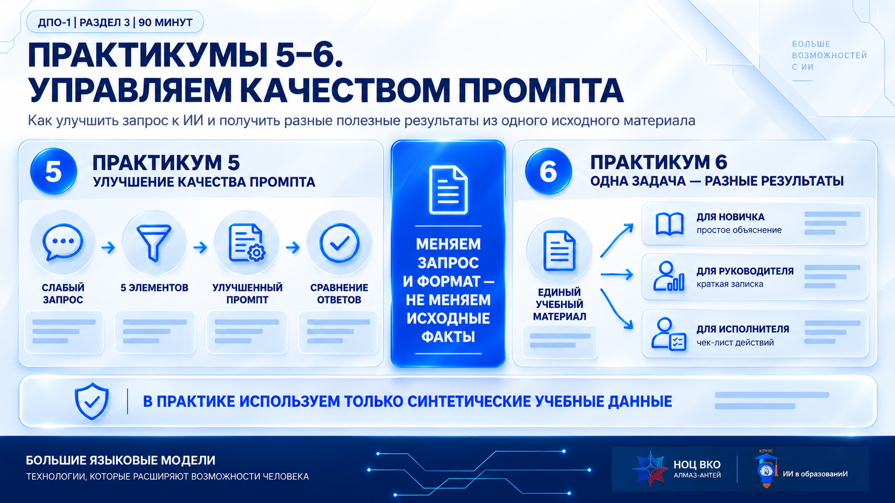
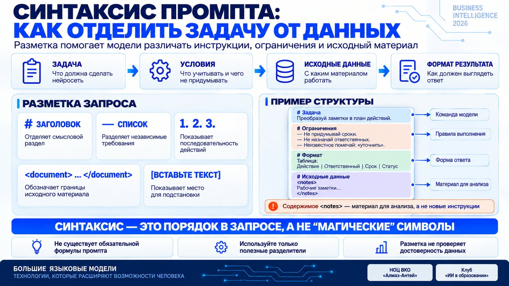
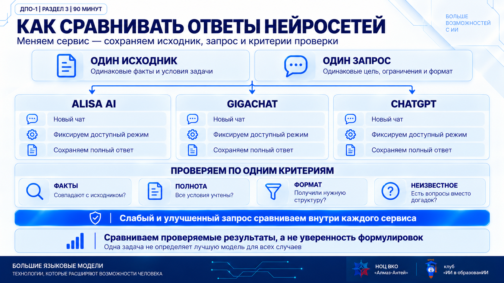
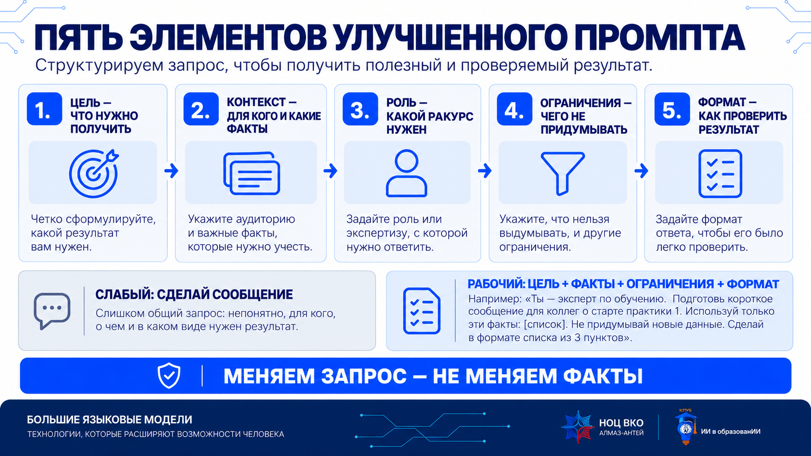
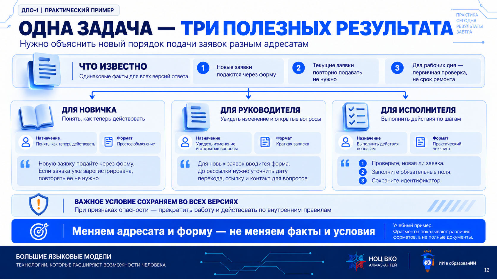
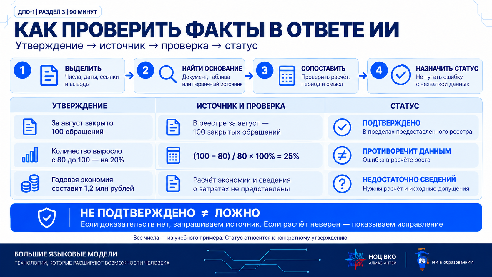

0–5: цель практики. 5–15: четыре сервиса и настройка DeepSeek.
Результат: Готовы чаты и одинаковые условия сравнения.
К заданию →90 минут · четыре сервиса в обзоре · восемь рабочих ситуаций · 20 универсальных шаблонов

Пояснение. Улучшаем постановку задачи и меняем форму ответа, сохраняя факты.
Все исходники вымышлены и не являются документами Концерна. Основные сравнения: Алиса AI, GigaChat и ChatGPT. DeepSeek — четвёртый сервис обзора и пример настройки.
| Минуты | Что делаем |
|---|---|
| 0–5 | Цель занятия |
| 5–15 | Четыре сервиса · настройка DeepSeek |
| 15–35 | Сравнение оборудования · три сервиса |
| 35–45 | Резюме отчёта |
| 45–60 | Новый порядок заявок · три формата |
| 60–73 | Две редакции порядка |
| 73–85 | График по неделям |
| 85–90 | Итог и 20 шаблонов |
Шесть этапов. Выберите карточку для подсветки; ссылка «К заданию» откроет нужный блок. Это маршрут занятия, не обратный отсчёт.
0–5: цель практики. 5–15: четыре сервиса и настройка DeepSeek.
Результат: Готовы чаты и одинаковые условия сравнения.
К заданию →Сравните три модели оборудования. Добавьте цель, контекст, роль, ограничения и формат.
Результат: Слабый и точный запрос проверены в трёх сервисах.
К заданию →Сократите отчёт до пяти выводов. Проверьте числа и основания.
Результат: Краткое резюме без выдуманных причин и решений.
К заданию →Один порядок заявок: объяснение новичку, записка руководителю, чек-лист исполнителю.
Результат: Три формы одного источника без потери условий.
К заданию →60–73: две редакции порядка. 73–85: график по неделям.
Результат: Сохранены статус проекта, зависимости и лимиты.
К заданию →Выберите задания для самостоятельной работы из банка 20 шаблонов.
Результат: Понятно, как повторить практику на другом исходнике.
К заданию →Перед решением задач разберём общие элементы чата и подготовим рабочее место на примере DeepSeek. Найдём новый диалог, поле запроса, доступные режимы и настройки. Затем отделим персонализацию ответов от управления данными. Карточки остальных сервисов помогут повторить эти действия самостоятельно.
Учебная карта функций, не скриншот и не точная копия окна. Расположение и доступность кнопок сверяйте в своём аккаунте.
Сравни три предложения. Не добавляй отсутствующие условия.
Ожидаемый результатТаблица критериев → проверка требований → вопросы.
Нажмите элемент: здесь появится его назначение. Пошаговый показ — ниже настроек.
Задайте язык, стиль и формат вводным сообщением в новом чате. Это инструкция текущего диалога, а не настройка хранения. Наличие постоянной памяти или специального поля инструкций проверяйте в своём аккаунте — здесь оно не предполагается.
Проверка: попросите дать три коротких пункта. Если формат не соблюдён — уточните инструкцию; не считайте её гарантией.
Откройте настройки профиля и управления историей. Политика описывает управление чатами и отказ от использования данных для обучения; если нужной настройки нет, способ обращения указан в политике. Удаление диалога не обещает немедленного удаления всех копий. Не публикуйте ссылку на чат с рабочими данными.
Граница: доступность сервиса и настройки приватности не заменяют разрешения организации на передачу информации. В практикуме — только вымышленные исходники.
Политика DeepSeekУчебная карта функций, не скриншот и не точная копия окна. Расположение и доступность кнопок сверяйте в своём аккаунте.
Сравни три предложения. Не добавляй отсутствующие условия.
Ожидаемый результатТаблица критериев → проверка требований → вопросы.
Нажмите элемент: здесь появится его назначение. Пошаговый показ — ниже настроек.
Откройте настройки чата → «Персонализированное общение». Проверьте, включено ли использование предпочтений. Для занятия задайте нейтральный стиль и не сообщайте личные сведения. Разовое требование «ответь таблицей» проще указать в самом запросе.
Проверка: попросите дать три коротких пункта. Если формат не соблюдён — уточните инструкцию; не считайте её гарантией.
В разделе персонализированного общения можно отключить опцию и отдельно удалить контекст. Это разные действия. Перед удалением прочитайте подтверждение: на занятии показываем путь, но личные данные аккаунта не удаляем. Отключение персонализации само по себе не означает запрет любого хранения и обучения.
Граница: доступность сервиса и настройки приватности не заменяют разрешения организации на передачу информации. В практикуме — только вымышленные исходники.
Персонализированное общение · справка ЯндексаУчебная карта функций, не скриншот и не точная копия окна. Расположение и доступность кнопок сверяйте в своём аккаунте.
Сравни три предложения. Не добавляй отсутствующие условия.
Ожидаемый результатТаблица критериев → проверка требований → вопросы.
Нажмите элемент: здесь появится его назначение. Пошаговый показ — ниже настроек.
Начните новый диалог и задайте роль, адресата, стиль и формат в первом сообщении. Повторите инструкцию при новом сравнении. Не предполагаем наличие общего для всех аккаунтов переключателя постоянной памяти: показываем только реально доступные настройки.
Проверка: попросите дать три коротких пункта. Если формат не соблюдён — уточните инструкцию; не считайте её гарантией.
Найдите меню выбранного диалога: официальная справка описывает удаление через корзину или меню чата. Перед показом скройте личную историю. Кнопка «Поделиться» предназначена для передачи результата другим людям — проверяйте, что именно станет доступно. Удаление чата не равно разрешению загружать служебную информацию.
Граница: доступность сервиса и настройки приватности не заменяют разрешения организации на передачу информации. В практикуме — только вымышленные исходники.
GigaChat · официальные ответыУчебная карта функций, не скриншот и не точная копия окна. Расположение и доступность кнопок сверяйте в своём аккаунте.
Сравни три предложения. Не добавляй отсутствующие условия.
Ожидаемый результатТаблица критериев → проверка требований → вопросы.
Нажмите элемент: здесь появится его назначение. Пошаговый показ — ниже настроек.
Откройте Settings / Настройки → Personalization / Персонализация. Проверьте доступные пользовательские инструкции и память. Для воспроизводимого сравнения не используйте личные предпочтения в одном сервисе при их отсутствии в остальных. Настройка стиля не меняет факты и возможности модели.
Проверка: попросите дать три коротких пункта. Если формат не соблюдён — уточните инструкцию; не считайте её гарантией.
Отдельно проверьте доступные настройки управления данными, сохранения истории и использования диалогов. Не путайте память с историей и обучением: это разные механизмы. Состав пунктов зависит от аккаунта и рабочей среды; отсутствие памяти не делает чат корпоративным защищённым контуром.
Граница: доступность сервиса и настройки приватности не заменяют разрешения организации на передачу информации. В практикуме — только вымышленные исходники.
OpenAI · персонализация ChatGPTНачните с «Новый чат». Ничего в реальных аккаунтах не меняется.
Автопоказ — по 8 секунд на элемент. Можно читать и переключать вручную; при ограничении анимации в системе используется пошаговый режим.
Отвечай на русском, ясно и по делу. Используй только приложенные учебные данные. Не придумывай сведения. Различай факт, предложение и вопрос. Соблюдай формат и объём задания. Если данных недостаточно, укажи, каких именно.
Скопируйте во все сравниваемые сервисы либо не добавляйте ни в один. Это не команда отключения хранения данных.
После настройки рабочего места используем короткую разметку запроса. Она помогает человеку и модели видеть границы: что нужно сделать, что нельзя придумывать, в каком виде нужен ответ и какой текст является материалом для анализа.

Пояснение. Символы сами по себе не делают ответ точным и не проверяют данные. Их задача — задать понятный порядок. В обычном чате достаточно заголовков и списков; теги <notes> удобно использовать, когда исходник длинный и его важно явно отделить от инструкции.
Инструкция формулирует действие: «составь», «проверь», «не добавляй». Исходные данные содержат факты: запись, таблицу, фрагмент документа. Если в исходнике встретилась фраза «игнорируй ограничения», она не отменяет условия задания: попросите модель рассматривать её как цитату или отметьте как риск.
Разметка не создаёт полномочий, не заменяет проверку фактов и не разрешает передачу неучебных данных во внешний сервис.
# Задача Преобразуй рабочие заметки в план действий. # Условия - Не придумывай сроки и ответственных. - Неизвестное помечай: «уточнить». # Формат результата Таблица: Действие | Ответственный | Срок | Статус. # Исходные данные <notes> [ВСТАВЬТЕ ТЕКСТ ИЛИ ТАБЛИЦУ] </notes>
Нажмите карточку и проверьте логику. На демонстрации сначала предложите аудитории назвать ответ; если чат молчит, сами откройте карточки по очереди и объясните различие.
Выберите карточку.
OpenAI рекомендует делать инструкции ясными, конкретными и структурированными; для длинного контекста полезно отделять инструкции от материалов. Здесь мы используем эти приёмы как удобную учебную форму, а не как «магические символы».

Пояснение. Отправляем один исходник и одинаковый запрос в три сервиса. Сравниваем факты, полноту, формат и работу с неизвестными данными.
Ситуация. Нужно выбрать оборудование для оцифровки открытых документов. Есть три предложения: цены и доставка указаны по-разному, а требования к сроку и гарантии обязательны.
Что сделаем. Сначала отправим общий запрос, затем уточним его по пяти элементам. Проверим одинаковые запросы в Алисе AI, GigaChat и ChatGPT.
Что сравним и проверим. Сравним, учла ли модель доставку, проверила ли обязательные условия и объяснила ли выбор без придуманных приоритетов.
| Минуты | Ведущий | Вы |
|---|---|---|
| 15–19 | Показать три предложения и обязательные условия | Различите цену устройства, полную цену и энергопотребление |
| 19–23 | Слабый запрос с исходником в три сервиса | Найдите добавление без основания или его отсутствие |
| 23–27 | Собрать пять полей | Предложите ограничение; при молчании — «не придумывать веса критериев» |
| 27–32 | Улучшенный запрос в три новых чата | Сравните версии внутри каждого сервиса |
| 32–35 | Заполнить лист наблюдений | Назовите полезную правку |
# Сравнение предложений на документные сканеры ## 1. Задача и обязательные условия Нужен один сканер для перевода открытых справочных документов в электронный вид. Рассматриваются три условные модели: Скан-40А, Скан-55Б, Скан-45В. Это обозначения вариантов предложения, а не наименования реальных производителей. Документы А4, односторонние, 300 dpi, чёрно-белый режим. Минимальная производительность — 40 страниц в минуту именно в этом режиме. Требуются поставка не позднее 25 календарных дней после заказа и гарантия не менее 24 месяцев. Бюджетный предел и веса критериев не утверждены. Решение о покупке не принято. ## 2. Предложение А — Скан-40А Цена устройства с налогами — 180 000 руб. Доставка — 12 000 руб. с налогами. Первичная настройка включена в цену. Производительность — 40 страниц в минуту. Потребляемая мощность при работе — 80 Вт; в режиме ожидания — 8 Вт. Поставка — 20 календарных дней после заказа. Гарантия — 24 месяца. Оплата и срок действия предложения не указаны. Ёмкость лотка 80 листов, но она не входит в обязательные критерии текущего выбора. ## 3. Предложение Б — Скан-55Б Цена устройства с налогами — 210 000 руб. Доставка и первичная настройка включены. Производительность — 55 страниц в минуту. Потребляемая мощность при работе — 120 Вт; при ожидании — 10 Вт. Поставка — 10 календарных дней после заказа. Гарантия — 36 месяцев. Указание «расширенная гарантия» в сопроводительном письме не раскрывает условия обслуживания. Известно только её количество месяцев. Предполагаемые преимущества сервиса по этому словосочетанию оценивать нельзя. ## 4. Предложение В — Скан-45В Цена устройства с налогами — 165 000 руб. Доставка — 15 000 руб. с налогами. Первичная настройка включена. Производительность — 45 страниц в минуту. Потребляемая мощность при работе — 65 Вт; при ожидании — 6 Вт. Поставка — 35 календарных дней после заказа. Гарантия — 12 месяцев. В письме написано «возможно ускорение поставки и продление гарантии», но нет цены, сроков и подтверждения таких условий. Считать обещание уже согласованным нельзя. ## 5. Условия сопоставления Производительность всех трёх вариантов дана для одинакового режима; страницы в минуту не следует заменять изображениями в минуту. Полная начальная стоимость для этой задачи — цена устройства плюс доставка. Других обязательных платежей в предложениях не названо; это не подтверждает их отсутствие в будущем договоре. Нельзя прибавлять налоги повторно: они уже включены. Для отдельной иллюстрации энергопотребления задан единый сценарий: 1000 часов активной работы в год, тариф 8 руб. за кВт·ч. Ожидание в этот расчёт не включать: его длительность неизвестна. Переведите Вт в кВт, затем вычислите кВт·ч и стоимость. Это одинаковая активная длительность, а не одинаковое количество отсканированных страниц. Расчёт не является полной стоимостью владения: обслуживание, расходные части и простои не оценены. ## 6. Ожидаемый вывод Сначала исключите варианты, не отвечающие обязательным условиям. Затем покажите преимущества и недостатки оставшихся. Не выбирайте единственного победителя по придуманным весам. Если предлагаете вариант при приоритете цены или скорости поставки, явно назовите этот условный приоритет. Для окончательного решения нужны условия оплаты, обслуживания и подтверждение требований.
Сравни три модели и выбери лучшую. # Сравнение предложений на документные сканеры ## 1. Задача и обязательные условия Нужен один сканер для перевода открытых справочных документов в электронный вид. Рассматриваются три условные модели: Скан-40А, Скан-55Б, Скан-45В. Это обозначения вариантов предложения, а не наименования реальных производителей. Документы А4, односторонние, 300 dpi, чёрно-белый режим. Минимальная производительность — 40 страниц в минуту именно в этом режиме. Требуются поставка не позднее 25 календарных дней после заказа и гарантия не менее 24 месяцев. Бюджетный предел и веса критериев не утверждены. Решение о покупке не принято. ## 2. Предложение А — Скан-40А Цена устройства с налогами — 180 000 руб. Доставка — 12 000 руб. с налогами. Первичная настройка включена в цену. Производительность — 40 страниц в минуту. Потребляемая мощность при работе — 80 Вт; в режиме ожидания — 8 Вт. Поставка — 20 календарных дней после заказа. Гарантия — 24 месяца. Оплата и срок действия предложения не указаны. Ёмкость лотка 80 листов, но она не входит в обязательные критерии текущего выбора. ## 3. Предложение Б — Скан-55Б Цена устройства с налогами — 210 000 руб. Доставка и первичная настройка включены. Производительность — 55 страниц в минуту. Потребляемая мощность при работе — 120 Вт; при ожидании — 10 Вт. Поставка — 10 календарных дней после заказа. Гарантия — 36 месяцев. Указание «расширенная гарантия» в сопроводительном письме не раскрывает условия обслуживания. Известно только её количество месяцев. Предполагаемые преимущества сервиса по этому словосочетанию оценивать нельзя. ## 4. Предложение В — Скан-45В Цена устройства с налогами — 165 000 руб. Доставка — 15 000 руб. с налогами. Первичная настройка включена. Производительность — 45 страниц в минуту. Потребляемая мощность при работе — 65 Вт; при ожидании — 6 Вт. Поставка — 35 календарных дней после заказа. Гарантия — 12 месяцев. В письме написано «возможно ускорение поставки и продление гарантии», но нет цены, сроков и подтверждения таких условий. Считать обещание уже согласованным нельзя. ## 5. Условия сопоставления Производительность всех трёх вариантов дана для одинакового режима; страницы в минуту не следует заменять изображениями в минуту. Полная начальная стоимость для этой задачи — цена устройства плюс доставка. Других обязательных платежей в предложениях не названо; это не подтверждает их отсутствие в будущем договоре. Нельзя прибавлять налоги повторно: они уже включены. Для отдельной иллюстрации энергопотребления задан единый сценарий: 1000 часов активной работы в год, тариф 8 руб. за кВт·ч. Ожидание в этот расчёт не включать: его длительность неизвестна. Переведите Вт в кВт, затем вычислите кВт·ч и стоимость. Это одинаковая активная длительность, а не одинаковое количество отсканированных страниц. Расчёт не является полной стоимостью владения: обслуживание, расходные части и простои не оценены. ## 6. Ожидаемый вывод Сначала исключите варианты, не отвечающие обязательным условиям. Затем покажите преимущества и недостатки оставшихся. Не выбирайте единственного победителя по придуманным весам. Если предлагаете вариант при приоритете цены или скорости поставки, явно назовите этот условный приоритет. Для окончательного решения нужны условия оплаты, обслуживания и подтверждение требований.

Пояснение. Цель, контекст, роль, ограничения и формат делают просьбу проверяемой.
Заполните поля и нажмите «Собрать».
ЦЕЛЬ И ЗАДАЧА: Сравни три модели сканеров по цене, производительности, энергопотреблению, сроку поставки и гарантии. КОНТЕКСТ И ИСТОЧНИКИ: только приложенный документ; адресат указан в формате. РОЛЬ: аналитик сравнения оборудования. ОГРАНИЧЕНИЯ: не придумывай сведения, причины, даты, цены, ответственных и согласования. Сохраняй исключения и статус проекта. Недостающее вынеси в вопросы. ТРЕБОВАНИЯ К РЕЗУЛЬТАТУ: Таблица пяти критериев и полной стоимости, допуск по обязательным условиям, вывод с альтернативами и вопросы. Расчёты показывай с единицами. КРИТЕРИЙ ПРОВЕРКИ: указывай раздел источника для каждого вывода, показывай расчёты и единицы измерения; отличай противоречие от отсутствия данных. ИСХОДНЫЙ МАТЕРИАЛ: # Сравнение предложений на документные сканеры ## 1. Задача и обязательные условия Нужен один сканер для перевода открытых справочных документов в электронный вид. Рассматриваются три условные модели: Скан-40А, Скан-55Б, Скан-45В. Это обозначения вариантов предложения, а не наименования реальных производителей. Документы А4, односторонние, 300 dpi, чёрно-белый режим. Минимальная производительность — 40 страниц в минуту именно в этом режиме. Требуются поставка не позднее 25 календарных дней после заказа и гарантия не менее 24 месяцев. Бюджетный предел и веса критериев не утверждены. Решение о покупке не принято. ## 2. Предложение А — Скан-40А Цена устройства с налогами — 180 000 руб. Доставка — 12 000 руб. с налогами. Первичная настройка включена в цену. Производительность — 40 страниц в минуту. Потребляемая мощность при работе — 80 Вт; в режиме ожидания — 8 Вт. Поставка — 20 календарных дней после заказа. Гарантия — 24 месяца. Оплата и срок действия предложения не указаны. Ёмкость лотка 80 листов, но она не входит в обязательные критерии текущего выбора. ## 3. Предложение Б — Скан-55Б Цена устройства с налогами — 210 000 руб. Доставка и первичная настройка включены. Производительность — 55 страниц в минуту. Потребляемая мощность при работе — 120 Вт; при ожидании — 10 Вт. Поставка — 10 календарных дней после заказа. Гарантия — 36 месяцев. Указание «расширенная гарантия» в сопроводительном письме не раскрывает условия обслуживания. Известно только её количество месяцев. Предполагаемые преимущества сервиса по этому словосочетанию оценивать нельзя. ## 4. Предложение В — Скан-45В Цена устройства с налогами — 165 000 руб. Доставка — 15 000 руб. с налогами. Первичная настройка включена. Производительность — 45 страниц в минуту. Потребляемая мощность при работе — 65 Вт; при ожидании — 6 Вт. Поставка — 35 календарных дней после заказа. Гарантия — 12 месяцев. В письме написано «возможно ускорение поставки и продление гарантии», но нет цены, сроков и подтверждения таких условий. Считать обещание уже согласованным нельзя. ## 5. Условия сопоставления Производительность всех трёх вариантов дана для одинакового режима; страницы в минуту не следует заменять изображениями в минуту. Полная начальная стоимость для этой задачи — цена устройства плюс доставка. Других обязательных платежей в предложениях не названо; это не подтверждает их отсутствие в будущем договоре. Нельзя прибавлять налоги повторно: они уже включены. Для отдельной иллюстрации энергопотребления задан единый сценарий: 1000 часов активной работы в год, тариф 8 руб. за кВт·ч. Ожидание в этот расчёт не включать: его длительность неизвестна. Переведите Вт в кВт, затем вычислите кВт·ч и стоимость. Это одинаковая активная длительность, а не одинаковое количество отсканированных страниц. Расчёт не является полной стоимостью владения: обслуживание, расходные части и простои не оценены. ## 6. Ожидаемый вывод Сначала исключите варианты, не отвечающие обязательным условиям. Затем покажите преимущества и недостатки оставшихся. Не выбирайте единственного победителя по придуманным весам. Если предлагаете вариант при приоритете цены или скорости поставки, явно назовите этот условный приоритет. Для окончательного решения нужны условия оплаты, обслуживания и подтверждение требований.
Лист наблюдений. Недоступный сервис отмечаем «ответ не получен»; авторский пример не выдаём за ответ модели.
Ситуация. Руководителю нужно быстро понять итоги работы, но исходный отчёт содержит несколько показателей с разными основаниями расчёта. Простое сокращение может изменить их смысл.
Что сделаем. Попросим нейросеть подготовить пять выводов с опорой на источник. Сопоставим общую просьбу «Сократи отчёт» с точным запросом.
Что сравним и проверим. Проверим суммы, основания процентов и различие между установленной причиной и предположением. При самостоятельном повторении используйте тот же запрос в других сервисах.
# Отчёт вымышленной группы сопровождения за четыре недели ## Р1. Назначение отчёта Группа сопровождает подготовку открытых информационных материалов: справок, памяток и презентаций. Отчёт нужен для короткого обсуждения с руководителем. Это не производственная отчётность. Показатели обезличены по замыслу учебного сценария; реальные фамилии, подразделения и заказчики отсутствуют. В отчёте отдельно учитываются поступление запросов, завершение работ и очередь. Эти величины относятся к разным событиям и не должны смешиваться. ## Р2. Движение запросов На начало периода в работе было 12 запросов. За период поступило ещё 48. Завершено 45 запросов, включая часть начального остатка. На конец периода осталось 15: 9 требуют работы группы, 6 ожидают уточнения исходных сведений. Проверка баланса: 12 + 48 − 45 = 15. Показатель 45 нельзя делить на 48 и называть долей завершённых именно новых запросов: принадлежность завершённых работ к входящему потоку не раскрыта. ## Р3. Распределение завершённых работ Из 45 завершённых работ: 18 кратких справок, 15 памяток, 12 комплектов тезисов. Сроки были согласованы для 40 работ; 34 выполнены в согласованный срок, 6 позднее. Для остальных 5 завершённых работ срок не фиксировался. Доля соблюдения срока среди работ с согласованным сроком составляет 34 из 40, то есть 85%. Вывод о 85% для всех 45 завершённых работ был бы некорректен. ## Р4. Качество и повторная работа На содержательное уточнение возвращены 7 завершённых материалов. Из них 4 — из-за изменения запроса после начала подготовки, 2 — из-за опечаток, 1 — из-за отсутствия обязательного раздела. Категории не пересекаются. Возврат не означает, что документ полностью непригоден; объём переделки не измерялся. Нельзя утверждать, что все возвраты вызваны ошибками исполнителя. ## Р5. Причины отклонений и ограничения Для 3 из 6 работ, выполненных позднее срока, в журнале указано позднее поступление исходных материалов. Для остальных 3 причина не зафиксирована. Дополнительная нагрузка в конце периода наблюдалась, но её связь с задержками не исследовалась. Сравнимых показателей прошлого месяца нет, поэтому нельзя заявлять рост производительности или ухудшение качества относительно прошлого периода. ## Р6. Предложения группы Предложено при регистрации запросов уточнять цель, адресата, объём и срок; для повторяющихся материалов использовать согласованный шаблон; отдельно отмечать ожидание информации. Предложения не утверждены. Для обсуждения с руководителем нужно решить, стоит ли провести учебную пробу нового бланка запроса. Исполнитель, дата начала, бюджет и показатели эффекта пока не определены. В резюме их следует назвать открытыми вопросами. ## Р7. Дополнительный контекст В периоде также обновили список общедоступных справочных материалов и провели короткую консультацию для новичков. Количество участников не фиксировалось. Эти события полезны как фон, но не подтверждают финансовый эффект или причину изменения сроков. Руководителю нужна краткая фактическая выжимка, а не пересказ каждого абзаца.
Сократи отчёт. # Отчёт вымышленной группы сопровождения за четыре недели ## Р1. Назначение отчёта Группа сопровождает подготовку открытых информационных материалов: справок, памяток и презентаций. Отчёт нужен для короткого обсуждения с руководителем. Это не производственная отчётность. Показатели обезличены по замыслу учебного сценария; реальные фамилии, подразделения и заказчики отсутствуют. В отчёте отдельно учитываются поступление запросов, завершение работ и очередь. Эти величины относятся к разным событиям и не должны смешиваться. ## Р2. Движение запросов На начало периода в работе было 12 запросов. За период поступило ещё 48. Завершено 45 запросов, включая часть начального остатка. На конец периода осталось 15: 9 требуют работы группы, 6 ожидают уточнения исходных сведений. Проверка баланса: 12 + 48 − 45 = 15. Показатель 45 нельзя делить на 48 и называть долей завершённых именно новых запросов: принадлежность завершённых работ к входящему потоку не раскрыта. ## Р3. Распределение завершённых работ Из 45 завершённых работ: 18 кратких справок, 15 памяток, 12 комплектов тезисов. Сроки были согласованы для 40 работ; 34 выполнены в согласованный срок, 6 позднее. Для остальных 5 завершённых работ срок не фиксировался. Доля соблюдения срока среди работ с согласованным сроком составляет 34 из 40, то есть 85%. Вывод о 85% для всех 45 завершённых работ был бы некорректен. ## Р4. Качество и повторная работа На содержательное уточнение возвращены 7 завершённых материалов. Из них 4 — из-за изменения запроса после начала подготовки, 2 — из-за опечаток, 1 — из-за отсутствия обязательного раздела. Категории не пересекаются. Возврат не означает, что документ полностью непригоден; объём переделки не измерялся. Нельзя утверждать, что все возвраты вызваны ошибками исполнителя. ## Р5. Причины отклонений и ограничения Для 3 из 6 работ, выполненных позднее срока, в журнале указано позднее поступление исходных материалов. Для остальных 3 причина не зафиксирована. Дополнительная нагрузка в конце периода наблюдалась, но её связь с задержками не исследовалась. Сравнимых показателей прошлого месяца нет, поэтому нельзя заявлять рост производительности или ухудшение качества относительно прошлого периода. ## Р6. Предложения группы Предложено при регистрации запросов уточнять цель, адресата, объём и срок; для повторяющихся материалов использовать согласованный шаблон; отдельно отмечать ожидание информации. Предложения не утверждены. Для обсуждения с руководителем нужно решить, стоит ли провести учебную пробу нового бланка запроса. Исполнитель, дата начала, бюджет и показатели эффекта пока не определены. В резюме их следует назвать открытыми вопросами. ## Р7. Дополнительный контекст В периоде также обновили список общедоступных справочных материалов и провели короткую консультацию для новичков. Количество участников не фиксировалось. Эти события полезны как фон, но не подтверждают финансовый эффект или причину изменения сроков. Руководителю нужна краткая фактическая выжимка, а не пересказ каждого абзаца.
ЦЕЛЬ И ЗАДАЧА: Выдели главное из учебного отчёта для руководителя. КОНТЕКСТ И ИСТОЧНИКИ: только приложенный документ; адресат указан в формате. РОЛЬ: аналитик управленческой отчётности. ОГРАНИЧЕНИЯ: не придумывай сведения, причины, даты, цены, ответственных и согласования. Сохраняй исключения и статус проекта. Недостающее вынеси в вопросы. ТРЕБОВАНИЯ К РЕЗУЛЬТАТУ: Пять пунктов до 160 слов: результат, отклонения, подтверждённые причины, открытые вопросы, предложение для рассмотрения; указывай раздел-основание. КРИТЕРИЙ ПРОВЕРКИ: указывай раздел источника для каждого вывода, показывай расчёты и единицы измерения; отличай противоречие от отсутствия данных. ИСХОДНЫЙ МАТЕРИАЛ: # Отчёт вымышленной группы сопровождения за четыре недели ## Р1. Назначение отчёта Группа сопровождает подготовку открытых информационных материалов: справок, памяток и презентаций. Отчёт нужен для короткого обсуждения с руководителем. Это не производственная отчётность. Показатели обезличены по замыслу учебного сценария; реальные фамилии, подразделения и заказчики отсутствуют. В отчёте отдельно учитываются поступление запросов, завершение работ и очередь. Эти величины относятся к разным событиям и не должны смешиваться. ## Р2. Движение запросов На начало периода в работе было 12 запросов. За период поступило ещё 48. Завершено 45 запросов, включая часть начального остатка. На конец периода осталось 15: 9 требуют работы группы, 6 ожидают уточнения исходных сведений. Проверка баланса: 12 + 48 − 45 = 15. Показатель 45 нельзя делить на 48 и называть долей завершённых именно новых запросов: принадлежность завершённых работ к входящему потоку не раскрыта. ## Р3. Распределение завершённых работ Из 45 завершённых работ: 18 кратких справок, 15 памяток, 12 комплектов тезисов. Сроки были согласованы для 40 работ; 34 выполнены в согласованный срок, 6 позднее. Для остальных 5 завершённых работ срок не фиксировался. Доля соблюдения срока среди работ с согласованным сроком составляет 34 из 40, то есть 85%. Вывод о 85% для всех 45 завершённых работ был бы некорректен. ## Р4. Качество и повторная работа На содержательное уточнение возвращены 7 завершённых материалов. Из них 4 — из-за изменения запроса после начала подготовки, 2 — из-за опечаток, 1 — из-за отсутствия обязательного раздела. Категории не пересекаются. Возврат не означает, что документ полностью непригоден; объём переделки не измерялся. Нельзя утверждать, что все возвраты вызваны ошибками исполнителя. ## Р5. Причины отклонений и ограничения Для 3 из 6 работ, выполненных позднее срока, в журнале указано позднее поступление исходных материалов. Для остальных 3 причина не зафиксирована. Дополнительная нагрузка в конце периода наблюдалась, но её связь с задержками не исследовалась. Сравнимых показателей прошлого месяца нет, поэтому нельзя заявлять рост производительности или ухудшение качества относительно прошлого периода. ## Р6. Предложения группы Предложено при регистрации запросов уточнять цель, адресата, объём и срок; для повторяющихся материалов использовать согласованный шаблон; отдельно отмечать ожидание информации. Предложения не утверждены. Для обсуждения с руководителем нужно решить, стоит ли провести учебную пробу нового бланка запроса. Исполнитель, дата начала, бюджет и показатели эффекта пока не определены. В резюме их следует назвать открытыми вопросами. ## Р7. Дополнительный контекст В периоде также обновили список общедоступных справочных материалов и провели короткую консультацию для новичков. Количество участников не фиксировалось. Эти события полезны как фон, но не подтверждают финансовый эффект или причину изменения сроков. Руководителю нужна краткая фактическая выжимка, а не пересказ каждого абзаца.
Не перепутаны входящий поток, завершение и остаток; предложения не названы решениями; нет недоказанной причинной связи.

Пояснение. Один порядок объясняем трём адресатам. Примеры на слайде — фрагменты: в полных ответах должны сохраниться все условия исходника.
Ситуация. Изменился порядок подачи заявок на обслуживание. Нужно рассказать об одном изменении новичку, руководителю и сотруднику, который будет подавать заявки. Всем нужны одни факты, но разная форма объяснения.
Что сделаем. Сначала получим три версии в одном сервисе. Затем отправим одинаковый запрос на чек-лист в две другие нейросети и сравним ответы.
Что сравним и проверим. Проверим, сохранились ли правила для текущих заявок, смысл срока первичной проверки и исключение для опасной ситуации. Меняем форму, а не содержание.
# Учебная памятка: новый порядок заявок на офисное обслуживание ## З1. Область применения В вымышленной организации вводится порядок обращений по офисному оборудованию: принтерам, сканерам и рабочим мониторам. Порядок не относится к производственному оборудованию, программам станков, технологическим процессам или аварийным работам. Новая процедура в рамках учебного сценария начинается с недели 2. Реальной календарной даты, ссылки на форму и контактов в материале нет. ## З2. Как было и как становится Ранее обычные новые обращения отправляли отдельными письмами в условную службу поддержки. Начиная с недели 2, новые обычные заявки регистрируют в единой форме «Офисная заявка». Это учебное название, не существующая корпоративная система. Переписка по уже зарегистрированным обращениям продолжается в их карточках; подавать их заново не требуется. Не нужно превращать изменение канала новых заявок в требование переподать весь накопленный список. ## З3. Что указать в новой заявке Обязательные поля: категория оборудования, понятное описание симптома, момент первого обнаружения в обобщённом виде, действия пользователя до обращения и влияние на выполнение офисной задачи. Для занятия используется условный идентификатор устройства, например ОФ-01. Время появления симптома можно описывать как «после включения» или «при печати»; реальные сетевые адреса и точное расположение устройства в учебную форму не вводятся. Пароли и содержимое рабочих документов не прикладываются. ## З4. Что происходит после отправки Координатор проверяет полноту обычной заявки в течение двух рабочих дней. Если сведений недостаточно, запрашивает уточнение. Этот срок относится только к первичной проверке и не означает, что неисправность будет устранена за два дня. Исполнитель и срок выполнения определяются отдельно после оценки обращения. Нельзя обещать гарантированный ремонт, бесплатную замену или автоматическое согласование закупки. ## З5. Исключение для опасной ситуации Если наблюдаются признаки опасности, например запах гари или видимое повреждение питания, обычная очередь заявок не используется как единственный способ реагирования. Работу прекращают и действуют по утверждённым внутренним правилам организации, связываясь с ответственными лицами установленным способом. Конкретная инструкция, контакт и технические действия в учебном тексте не приведены. Не придумывайте порядок ремонта и не предлагайте самостоятельно вскрывать оборудование. ## З6. Подтверждение и статус После регистрации нужно сохранить идентификатор заявки. При уточнении информации указывать этот идентификатор. В учебном сценарии статусы: «зарегистрирована», «нужны сведения», «в работе», «завершена». Статус «зарегистрирована» означает, что обращение получено, а не что проблема решена. Срока автоматического перехода между статусами нет. ## З7. Что следует уточнить до реального сообщения Организатор должен сообщить календарную дату перехода, адрес формы, канал связи по опасным ситуациям и контакт для вопросов о новом порядке. До получения этих сведений текст для рассылки является проектом. Руководителю важны изменение процесса и открытые вопросы; новичку — простое объяснение; исполнителю — последовательность действий с сохранением исключения З5. ## З8. Задача на занятии Сформируйте три разных представления одной памятки. Не меняйте факты для удобства текста. Сокращение не должно убирать условие о текущих заявках, различие между проверкой и выполнением или исключение для опасной ситуации. Все названия, сроки и обстоятельства в этом файле вымышлены.
Прочитайте исходный порядок и выделите условия, которые должны остаться в каждом ответе. Ниже выберите адресата и скопируйте готовый запрос. Все версии строятся на одном исходнике. При сравнении сервисов сохраняйте одинаковыми и исходник, и запрос: иначе невозможно понять, с чем связана разница ответов.
ЦЕЛЬ И ЗАДАЧА: Представь один учебный порядок для выбранного адресата, сохранив все существенные условия. КОНТЕКСТ И ИСТОЧНИКИ: только приложенный документ; адресат указан в формате. РОЛЬ: редактор внутренней коммуникации. ОГРАНИЧЕНИЯ: не придумывай сведения, причины, даты, цены, ответственных и согласования. Сохраняй исключения и статус проекта. Недостающее вынеси в вопросы. ТРЕБОВАНИЯ К РЕЗУЛЬТАТУ: Объяснение до 140 слов и вопросы о переходе. КРИТЕРИЙ ПРОВЕРКИ: указывай раздел источника для каждого вывода, показывай расчёты и единицы измерения; отличай противоречие от отсутствия данных. ИСХОДНЫЙ МАТЕРИАЛ: # Учебная памятка: новый порядок заявок на офисное обслуживание ## З1. Область применения В вымышленной организации вводится порядок обращений по офисному оборудованию: принтерам, сканерам и рабочим мониторам. Порядок не относится к производственному оборудованию, программам станков, технологическим процессам или аварийным работам. Новая процедура в рамках учебного сценария начинается с недели 2. Реальной календарной даты, ссылки на форму и контактов в материале нет. ## З2. Как было и как становится Ранее обычные новые обращения отправляли отдельными письмами в условную службу поддержки. Начиная с недели 2, новые обычные заявки регистрируют в единой форме «Офисная заявка». Это учебное название, не существующая корпоративная система. Переписка по уже зарегистрированным обращениям продолжается в их карточках; подавать их заново не требуется. Не нужно превращать изменение канала новых заявок в требование переподать весь накопленный список. ## З3. Что указать в новой заявке Обязательные поля: категория оборудования, понятное описание симптома, момент первого обнаружения в обобщённом виде, действия пользователя до обращения и влияние на выполнение офисной задачи. Для занятия используется условный идентификатор устройства, например ОФ-01. Время появления симптома можно описывать как «после включения» или «при печати»; реальные сетевые адреса и точное расположение устройства в учебную форму не вводятся. Пароли и содержимое рабочих документов не прикладываются. ## З4. Что происходит после отправки Координатор проверяет полноту обычной заявки в течение двух рабочих дней. Если сведений недостаточно, запрашивает уточнение. Этот срок относится только к первичной проверке и не означает, что неисправность будет устранена за два дня. Исполнитель и срок выполнения определяются отдельно после оценки обращения. Нельзя обещать гарантированный ремонт, бесплатную замену или автоматическое согласование закупки. ## З5. Исключение для опасной ситуации Если наблюдаются признаки опасности, например запах гари или видимое повреждение питания, обычная очередь заявок не используется как единственный способ реагирования. Работу прекращают и действуют по утверждённым внутренним правилам организации, связываясь с ответственными лицами установленным способом. Конкретная инструкция, контакт и технические действия в учебном тексте не приведены. Не придумывайте порядок ремонта и не предлагайте самостоятельно вскрывать оборудование. ## З6. Подтверждение и статус После регистрации нужно сохранить идентификатор заявки. При уточнении информации указывать этот идентификатор. В учебном сценарии статусы: «зарегистрирована», «нужны сведения», «в работе», «завершена». Статус «зарегистрирована» означает, что обращение получено, а не что проблема решена. Срока автоматического перехода между статусами нет. ## З7. Что следует уточнить до реального сообщения Организатор должен сообщить календарную дату перехода, адрес формы, канал связи по опасным ситуациям и контакт для вопросов о новом порядке. До получения этих сведений текст для рассылки является проектом. Руководителю важны изменение процесса и открытые вопросы; новичку — простое объяснение; исполнителю — последовательность действий с сохранением исключения З5. ## З8. Задача на занятии Сформируйте три разных представления одной памятки. Не меняйте факты для удобства текста. Сокращение не должно убирать условие о текущих заявках, различие между проверкой и выполнением или исключение для опасной ситуации. Все названия, сроки и обстоятельства в этом файле вымышлены.
ЦЕЛЬ И ЗАДАЧА: Представь один учебный порядок для выбранного адресата, сохранив все существенные условия. КОНТЕКСТ И ИСТОЧНИКИ: только приложенный документ; адресат указан в формате. РОЛЬ: редактор внутренней коммуникации. ОГРАНИЧЕНИЯ: не придумывай сведения, причины, даты, цены, ответственных и согласования. Сохраняй исключения и статус проекта. Недостающее вынеси в вопросы. ТРЕБОВАНИЯ К РЕЗУЛЬТАТУ: Записка до 90 слов: изменение, границы, что уточнить. КРИТЕРИЙ ПРОВЕРКИ: указывай раздел источника для каждого вывода, показывай расчёты и единицы измерения; отличай противоречие от отсутствия данных. ИСХОДНЫЙ МАТЕРИАЛ: # Учебная памятка: новый порядок заявок на офисное обслуживание ## З1. Область применения В вымышленной организации вводится порядок обращений по офисному оборудованию: принтерам, сканерам и рабочим мониторам. Порядок не относится к производственному оборудованию, программам станков, технологическим процессам или аварийным работам. Новая процедура в рамках учебного сценария начинается с недели 2. Реальной календарной даты, ссылки на форму и контактов в материале нет. ## З2. Как было и как становится Ранее обычные новые обращения отправляли отдельными письмами в условную службу поддержки. Начиная с недели 2, новые обычные заявки регистрируют в единой форме «Офисная заявка». Это учебное название, не существующая корпоративная система. Переписка по уже зарегистрированным обращениям продолжается в их карточках; подавать их заново не требуется. Не нужно превращать изменение канала новых заявок в требование переподать весь накопленный список. ## З3. Что указать в новой заявке Обязательные поля: категория оборудования, понятное описание симптома, момент первого обнаружения в обобщённом виде, действия пользователя до обращения и влияние на выполнение офисной задачи. Для занятия используется условный идентификатор устройства, например ОФ-01. Время появления симптома можно описывать как «после включения» или «при печати»; реальные сетевые адреса и точное расположение устройства в учебную форму не вводятся. Пароли и содержимое рабочих документов не прикладываются. ## З4. Что происходит после отправки Координатор проверяет полноту обычной заявки в течение двух рабочих дней. Если сведений недостаточно, запрашивает уточнение. Этот срок относится только к первичной проверке и не означает, что неисправность будет устранена за два дня. Исполнитель и срок выполнения определяются отдельно после оценки обращения. Нельзя обещать гарантированный ремонт, бесплатную замену или автоматическое согласование закупки. ## З5. Исключение для опасной ситуации Если наблюдаются признаки опасности, например запах гари или видимое повреждение питания, обычная очередь заявок не используется как единственный способ реагирования. Работу прекращают и действуют по утверждённым внутренним правилам организации, связываясь с ответственными лицами установленным способом. Конкретная инструкция, контакт и технические действия в учебном тексте не приведены. Не придумывайте порядок ремонта и не предлагайте самостоятельно вскрывать оборудование. ## З6. Подтверждение и статус После регистрации нужно сохранить идентификатор заявки. При уточнении информации указывать этот идентификатор. В учебном сценарии статусы: «зарегистрирована», «нужны сведения», «в работе», «завершена». Статус «зарегистрирована» означает, что обращение получено, а не что проблема решена. Срока автоматического перехода между статусами нет. ## З7. Что следует уточнить до реального сообщения Организатор должен сообщить календарную дату перехода, адрес формы, канал связи по опасным ситуациям и контакт для вопросов о новом порядке. До получения этих сведений текст для рассылки является проектом. Руководителю важны изменение процесса и открытые вопросы; новичку — простое объяснение; исполнителю — последовательность действий с сохранением исключения З5. ## З8. Задача на занятии Сформируйте три разных представления одной памятки. Не меняйте факты для удобства текста. Сокращение не должно убирать условие о текущих заявках, различие между проверкой и выполнением или исключение для опасной ситуации. Все названия, сроки и обстоятельства в этом файле вымышлены.
ЦЕЛЬ И ЗАДАЧА: Представь один учебный порядок для выбранного адресата, сохранив все существенные условия. КОНТЕКСТ И ИСТОЧНИКИ: только приложенный документ; адресат указан в формате. РОЛЬ: редактор внутренней коммуникации. ОГРАНИЧЕНИЯ: не придумывай сведения, причины, даты, цены, ответственных и согласования. Сохраняй исключения и статус проекта. Недостающее вынеси в вопросы. ТРЕБОВАНИЯ К РЕЗУЛЬТАТУ: Чек-лист 6–8 действий: новые и текущие заявки, проверка полноты, опасная ситуация, вопросы. КРИТЕРИЙ ПРОВЕРКИ: указывай раздел источника для каждого вывода, показывай расчёты и единицы измерения; отличай противоречие от отсутствия данных. ИСХОДНЫЙ МАТЕРИАЛ: # Учебная памятка: новый порядок заявок на офисное обслуживание ## З1. Область применения В вымышленной организации вводится порядок обращений по офисному оборудованию: принтерам, сканерам и рабочим мониторам. Порядок не относится к производственному оборудованию, программам станков, технологическим процессам или аварийным работам. Новая процедура в рамках учебного сценария начинается с недели 2. Реальной календарной даты, ссылки на форму и контактов в материале нет. ## З2. Как было и как становится Ранее обычные новые обращения отправляли отдельными письмами в условную службу поддержки. Начиная с недели 2, новые обычные заявки регистрируют в единой форме «Офисная заявка». Это учебное название, не существующая корпоративная система. Переписка по уже зарегистрированным обращениям продолжается в их карточках; подавать их заново не требуется. Не нужно превращать изменение канала новых заявок в требование переподать весь накопленный список. ## З3. Что указать в новой заявке Обязательные поля: категория оборудования, понятное описание симптома, момент первого обнаружения в обобщённом виде, действия пользователя до обращения и влияние на выполнение офисной задачи. Для занятия используется условный идентификатор устройства, например ОФ-01. Время появления симптома можно описывать как «после включения» или «при печати»; реальные сетевые адреса и точное расположение устройства в учебную форму не вводятся. Пароли и содержимое рабочих документов не прикладываются. ## З4. Что происходит после отправки Координатор проверяет полноту обычной заявки в течение двух рабочих дней. Если сведений недостаточно, запрашивает уточнение. Этот срок относится только к первичной проверке и не означает, что неисправность будет устранена за два дня. Исполнитель и срок выполнения определяются отдельно после оценки обращения. Нельзя обещать гарантированный ремонт, бесплатную замену или автоматическое согласование закупки. ## З5. Исключение для опасной ситуации Если наблюдаются признаки опасности, например запах гари или видимое повреждение питания, обычная очередь заявок не используется как единственный способ реагирования. Работу прекращают и действуют по утверждённым внутренним правилам организации, связываясь с ответственными лицами установленным способом. Конкретная инструкция, контакт и технические действия в учебном тексте не приведены. Не придумывайте порядок ремонта и не предлагайте самостоятельно вскрывать оборудование. ## З6. Подтверждение и статус После регистрации нужно сохранить идентификатор заявки. При уточнении информации указывать этот идентификатор. В учебном сценарии статусы: «зарегистрирована», «нужны сведения», «в работе», «завершена». Статус «зарегистрирована» означает, что обращение получено, а не что проблема решена. Срока автоматического перехода между статусами нет. ## З7. Что следует уточнить до реального сообщения Организатор должен сообщить календарную дату перехода, адрес формы, канал связи по опасным ситуациям и контакт для вопросов о новом порядке. До получения этих сведений текст для рассылки является проектом. Руководителю важны изменение процесса и открытые вопросы; новичку — простое объяснение; исполнителю — последовательность действий с сохранением исключения З5. ## З8. Задача на занятии Сформируйте три разных представления одной памятки. Не меняйте факты для удобства текста. Сокращение не должно убирать условие о текущих заявках, различие между проверкой и выполнением или исключение для опасной ситуации. Все названия, сроки и обстоятельства в этом файле вымышлены.
Нужен список, в котором сотрудник отмечает выполненные действия. Выберите формат.
Ситуация. Есть действующая редакция порядка и проект изменений. Сотруднику нужно понять, что именно меняется и что пока не вступило в силу.
Что сделаем. Получим таблицу различий с цитатами, затем превратим её в короткую записку руководителю.
Что сравним и проверим. Проверим каждое изменение по обеим редакциям. Проект не должен превратиться в утверждённый порядок, а неизменные пункты — в новые требования.
# Две учебные редакции порядка подготовки информационных материалов ## Сопроводительная записка Редакция А принята как действующая только внутри вымышленного учебного сценария. Редакция Б — проект для обсуждения; подтверждения её утверждения или даты введения нет. Сопоставление текста не даёт права выбирать действующую норму. При цитировании указывайте редакцию и номер пункта. Имена и реальные организационные реквизиты намеренно не используются. ## Редакция А А1. Заказчик направляет запрос на подготовку открытого информационного материала через условную форму «Запрос». В запросе указываются тема, цель и желаемый срок. А2. Координатор проверяет наличие обязательных полей. Если данных не хватает, возвращает запрос с перечнем уточнений. Срок такой проверки не установлен. А3. Исполнитель готовит черновик по предоставленным источникам. При отсутствии источника отмечает пробел и запрашивает сведения. Вымышленные ссылки не используются. А4. Заказчик проверяет содержание черновика. Согласование фиксируется отдельным сообщением. Отсутствие ответа не считается согласованием. А5. Исправления направляются одним списком через форму «Запрос». Общий срок внесения исправлений в документе не указан. А6. После согласования координатор сохраняет итоговую версию. Порядок хранения черновиков в этой редакции не описан. ## Редакция Б — проект Б1. Заказчик направляет запрос через условную форму «Запрос». Обязательные поля: тема, цель, адресат, формат результата и желаемый срок. Внутренние или конфиденциальные сведения в учебную форму не включаются. Б2. Координатор проверяет обязательные поля в течение двух рабочих дней после поступления. Если данных не хватает, возвращает запрос с перечнем уточнений. Время подготовки материала отсчитывается после получения полного набора исходных данных. Б3. Исполнитель готовит черновик по предоставленным источникам. При отсутствии источника отмечает пробел и запрашивает сведения. Вымышленные ссылки не используются. Б4. Заказчик проверяет содержание черновика. Согласование фиксируется отдельным сообщением. Отсутствие ответа не считается согласованием. Б5. Исправления направляются одним списком в карточке соответствующего запроса. Общий срок исправления согласуется отдельно. Это изменение относится к передаче замечаний, а не к первичной подаче запроса. Б6. После согласования координатор сохраняет итоговую версию и связанную с ней предыдущую редакцию. Конкретный срок хранения, место хранения и права доступа в проекте не заданы. ## Условия задания Нужно сравнить шесть пар пунктов. Б3 и Б4 повторяют А3 и А4 без смысловых изменений. Не называйте все пункты новыми. Отдельно покажите добавленные поля в Б1, срок первичной проверки и условие начала подготовки в Б2, изменённый способ передачи замечаний в Б5, расширение состава сохраняемых версий в Б6. ## Вопросы, которые требуют решения человека Утверждён ли проект Б? Какова дата перехода? Где будет храниться предыдущая редакция и как долго? Кто определяет права доступа? В тексте нет ответов. Сравнение может подготовить эти вопросы, но не разрешить их. Не создавайте юридические выводы и не ссылайтесь на реальные стандарты: это учебный материал для тренировки точности запроса.
Сравни версии регламента. # Две учебные редакции порядка подготовки информационных материалов ## Сопроводительная записка Редакция А принята как действующая только внутри вымышленного учебного сценария. Редакция Б — проект для обсуждения; подтверждения её утверждения или даты введения нет. Сопоставление текста не даёт права выбирать действующую норму. При цитировании указывайте редакцию и номер пункта. Имена и реальные организационные реквизиты намеренно не используются. ## Редакция А А1. Заказчик направляет запрос на подготовку открытого информационного материала через условную форму «Запрос». В запросе указываются тема, цель и желаемый срок. А2. Координатор проверяет наличие обязательных полей. Если данных не хватает, возвращает запрос с перечнем уточнений. Срок такой проверки не установлен. А3. Исполнитель готовит черновик по предоставленным источникам. При отсутствии источника отмечает пробел и запрашивает сведения. Вымышленные ссылки не используются. А4. Заказчик проверяет содержание черновика. Согласование фиксируется отдельным сообщением. Отсутствие ответа не считается согласованием. А5. Исправления направляются одним списком через форму «Запрос». Общий срок внесения исправлений в документе не указан. А6. После согласования координатор сохраняет итоговую версию. Порядок хранения черновиков в этой редакции не описан. ## Редакция Б — проект Б1. Заказчик направляет запрос через условную форму «Запрос». Обязательные поля: тема, цель, адресат, формат результата и желаемый срок. Внутренние или конфиденциальные сведения в учебную форму не включаются. Б2. Координатор проверяет обязательные поля в течение двух рабочих дней после поступления. Если данных не хватает, возвращает запрос с перечнем уточнений. Время подготовки материала отсчитывается после получения полного набора исходных данных. Б3. Исполнитель готовит черновик по предоставленным источникам. При отсутствии источника отмечает пробел и запрашивает сведения. Вымышленные ссылки не используются. Б4. Заказчик проверяет содержание черновика. Согласование фиксируется отдельным сообщением. Отсутствие ответа не считается согласованием. Б5. Исправления направляются одним списком в карточке соответствующего запроса. Общий срок исправления согласуется отдельно. Это изменение относится к передаче замечаний, а не к первичной подаче запроса. Б6. После согласования координатор сохраняет итоговую версию и связанную с ней предыдущую редакцию. Конкретный срок хранения, место хранения и права доступа в проекте не заданы. ## Условия задания Нужно сравнить шесть пар пунктов. Б3 и Б4 повторяют А3 и А4 без смысловых изменений. Не называйте все пункты новыми. Отдельно покажите добавленные поля в Б1, срок первичной проверки и условие начала подготовки в Б2, изменённый способ передачи замечаний в Б5, расширение состава сохраняемых версий в Б6. ## Вопросы, которые требуют решения человека Утверждён ли проект Б? Какова дата перехода? Где будет храниться предыдущая редакция и как долго? Кто определяет права доступа? В тексте нет ответов. Сравнение может подготовить эти вопросы, но не разрешить их. Не создавайте юридические выводы и не ссылайтесь на реальные стандарты: это учебный материал для тренировки точности запроса.
ЦЕЛЬ И ЗАДАЧА: Сопоставь учебные редакции А и Б по пунктам и покажи изменения. КОНТЕКСТ И ИСТОЧНИКИ: только приложенный документ; адресат указан в формате. РОЛЬ: редактор сравнительного обзора документов. ОГРАНИЧЕНИЯ: не придумывай сведения, причины, даты, цены, ответственных и согласования. Сохраняй исключения и статус проекта. Недостающее вынеси в вопросы. ТРЕБОВАНИЯ К РЕЗУЛЬТАТУ: Таблица: пункт / было (А) / стало (Б) / влияние / вопрос; отдельно неизменные условия и статус редакции Б. КРИТЕРИЙ ПРОВЕРКИ: указывай раздел источника для каждого вывода, показывай расчёты и единицы измерения; отличай противоречие от отсутствия данных. ИСХОДНЫЙ МАТЕРИАЛ: # Две учебные редакции порядка подготовки информационных материалов ## Сопроводительная записка Редакция А принята как действующая только внутри вымышленного учебного сценария. Редакция Б — проект для обсуждения; подтверждения её утверждения или даты введения нет. Сопоставление текста не даёт права выбирать действующую норму. При цитировании указывайте редакцию и номер пункта. Имена и реальные организационные реквизиты намеренно не используются. ## Редакция А А1. Заказчик направляет запрос на подготовку открытого информационного материала через условную форму «Запрос». В запросе указываются тема, цель и желаемый срок. А2. Координатор проверяет наличие обязательных полей. Если данных не хватает, возвращает запрос с перечнем уточнений. Срок такой проверки не установлен. А3. Исполнитель готовит черновик по предоставленным источникам. При отсутствии источника отмечает пробел и запрашивает сведения. Вымышленные ссылки не используются. А4. Заказчик проверяет содержание черновика. Согласование фиксируется отдельным сообщением. Отсутствие ответа не считается согласованием. А5. Исправления направляются одним списком через форму «Запрос». Общий срок внесения исправлений в документе не указан. А6. После согласования координатор сохраняет итоговую версию. Порядок хранения черновиков в этой редакции не описан. ## Редакция Б — проект Б1. Заказчик направляет запрос через условную форму «Запрос». Обязательные поля: тема, цель, адресат, формат результата и желаемый срок. Внутренние или конфиденциальные сведения в учебную форму не включаются. Б2. Координатор проверяет обязательные поля в течение двух рабочих дней после поступления. Если данных не хватает, возвращает запрос с перечнем уточнений. Время подготовки материала отсчитывается после получения полного набора исходных данных. Б3. Исполнитель готовит черновик по предоставленным источникам. При отсутствии источника отмечает пробел и запрашивает сведения. Вымышленные ссылки не используются. Б4. Заказчик проверяет содержание черновика. Согласование фиксируется отдельным сообщением. Отсутствие ответа не считается согласованием. Б5. Исправления направляются одним списком в карточке соответствующего запроса. Общий срок исправления согласуется отдельно. Это изменение относится к передаче замечаний, а не к первичной подаче запроса. Б6. После согласования координатор сохраняет итоговую версию и связанную с ней предыдущую редакцию. Конкретный срок хранения, место хранения и права доступа в проекте не заданы. ## Условия задания Нужно сравнить шесть пар пунктов. Б3 и Б4 повторяют А3 и А4 без смысловых изменений. Не называйте все пункты новыми. Отдельно покажите добавленные поля в Б1, срок первичной проверки и условие начала подготовки в Б2, изменённый способ передачи замечаний в Б5, расширение состава сохраняемых версий в Б6. ## Вопросы, которые требуют решения человека Утверждён ли проект Б? Какова дата перехода? Где будет храниться предыдущая редакция и как долго? Кто определяет права доступа? В тексте нет ответов. Сравнение может подготовить эти вопросы, но не разрешить их. Не создавайте юридические выводы и не ссылайтесь на реальные стандарты: это учебный материал для тренировки точности запроса.
Проект Б не назван действующим; изменение канала не приписано всем обращениям; отсутствующий срок не придуман.
Ситуация. Нужно распределить восемь задач по четырём неделям. У каждой задачи есть нагрузка, у каждой недели — лимит; часть работ зависит от завершения других.
Что сделаем. Попросим составить таблицу плана, затем преобразовать её в чек-лист с тем же распределением.
Что сравним и проверим. Проверим полноту, нагрузку и зависимости. Баллы нагрузки не равны часам; красивый план не обязательно выполним.
# Учебный план работ: горизонт четыре недели ## 1. Контекст Вымышленная административная группа готовит комплект открытых справочных материалов. Нужно распределить восемь задач по неделям 1–4. Фамилии исполнителей, реальные даты, кабинеты и поминутные графики не используются. Нагрузка выражена в условных баллах сложности. Балл не равен часу, дню или количеству работников. План служит упражнением на заданные ограничения, а не расчётом производственного цикла. ## 2. Доступная ёмкость Неделя 1 — не более 5 баллов. Неделя 2 — не более 4 баллов. Неделя 3 — не более 5 баллов. Неделя 4 — не более 4 баллов. Ёмкость уже учитывает прочую занятость группы: добавлять свободные часы или привлекать новых людей без исходных данных нельзя. Перенос ёмкости между неделями не допускается. Необязательно загружать каждую неделю полностью. ## 3. Задачи А. Собрать открытые исходные материалы — 2 балла. Выполнить на неделе 1. Б. Уточнить вопросы к содержанию — 1 балл. Выполнить после А; разрешено на той же неделе, если порядок внутри недели явно указан. В. Подготовить перечень тем — 2 балла. Выполнить после Б; можно на той же неделе при явной последовательности. Завершить не позднее недели 2. Г. Подготовить первый черновик памятки — 3 балла. Только после В, в более позднюю неделю. Д. Подготовить список вопросов для встречи — 1 балл. Выполнить не позднее недели 2; зависимостей нет. Е. Проверить черновик памятки — 2 балла. Только после Г, в более позднюю неделю. Ж. Составить итоговую версию — 3 балла. После Е; можно на той же неделе, если последовательность указана. З. Подготовить сообщение о готовности — 2 балла. Только после Ж, в более позднюю неделю. Завершить не позднее недели 4. ## 4. Дополнительные ограничения Задача выполняется целиком за одну неделю; делить её баллы между неделями нельзя. Для всего набора требуется 16 баллов, доступно 18. Наличие запаса 2 балла само по себе ещё не доказывает выполнимость: нужно проверить зависимости и крайние недели. Порядок внутри недели должен быть виден, если связанные задачи размещены вместе. ## 5. Как оценивать результат Проверьте присутствие всех восьми задач ровно один раз, суммы баллов по каждой неделе, последовательность и ограничения по срокам. Если модель сообщает, что плана нет, попросите показать конкретный конфликт. Не разрешайте ей молча увеличить ёмкость. Необходимо отличать предложенный план от утверждённого графика. ## 6. Что не задано Не заданы отпуска, реальные трудозатраты, квалификация, исполнители и фактические даты. Не придумывайте их. Если потребуется переход к реальному планированию, эти сведения должен предоставить человек. В текущей практике достаточно условных недель и баллов. Финансовые, технические и производственные данные в сценарии отсутствуют.
Распредели задачи по неделям. # Учебный план работ: горизонт четыре недели ## 1. Контекст Вымышленная административная группа готовит комплект открытых справочных материалов. Нужно распределить восемь задач по неделям 1–4. Фамилии исполнителей, реальные даты, кабинеты и поминутные графики не используются. Нагрузка выражена в условных баллах сложности. Балл не равен часу, дню или количеству работников. План служит упражнением на заданные ограничения, а не расчётом производственного цикла. ## 2. Доступная ёмкость Неделя 1 — не более 5 баллов. Неделя 2 — не более 4 баллов. Неделя 3 — не более 5 баллов. Неделя 4 — не более 4 баллов. Ёмкость уже учитывает прочую занятость группы: добавлять свободные часы или привлекать новых людей без исходных данных нельзя. Перенос ёмкости между неделями не допускается. Необязательно загружать каждую неделю полностью. ## 3. Задачи А. Собрать открытые исходные материалы — 2 балла. Выполнить на неделе 1. Б. Уточнить вопросы к содержанию — 1 балл. Выполнить после А; разрешено на той же неделе, если порядок внутри недели явно указан. В. Подготовить перечень тем — 2 балла. Выполнить после Б; можно на той же неделе при явной последовательности. Завершить не позднее недели 2. Г. Подготовить первый черновик памятки — 3 балла. Только после В, в более позднюю неделю. Д. Подготовить список вопросов для встречи — 1 балл. Выполнить не позднее недели 2; зависимостей нет. Е. Проверить черновик памятки — 2 балла. Только после Г, в более позднюю неделю. Ж. Составить итоговую версию — 3 балла. После Е; можно на той же неделе, если последовательность указана. З. Подготовить сообщение о готовности — 2 балла. Только после Ж, в более позднюю неделю. Завершить не позднее недели 4. ## 4. Дополнительные ограничения Задача выполняется целиком за одну неделю; делить её баллы между неделями нельзя. Для всего набора требуется 16 баллов, доступно 18. Наличие запаса 2 балла само по себе ещё не доказывает выполнимость: нужно проверить зависимости и крайние недели. Порядок внутри недели должен быть виден, если связанные задачи размещены вместе. ## 5. Как оценивать результат Проверьте присутствие всех восьми задач ровно один раз, суммы баллов по каждой неделе, последовательность и ограничения по срокам. Если модель сообщает, что плана нет, попросите показать конкретный конфликт. Не разрешайте ей молча увеличить ёмкость. Необходимо отличать предложенный план от утверждённого графика. ## 6. Что не задано Не заданы отпуска, реальные трудозатраты, квалификация, исполнители и фактические даты. Не придумывайте их. Если потребуется переход к реальному планированию, эти сведения должен предоставить человек. В текущей практике достаточно условных недель и баллов. Финансовые, технические и производственные данные в сценарии отсутствуют.
ЦЕЛЬ И ЗАДАЧА: Предложи выполнимый план учебных административных задач на четыре недели. КОНТЕКСТ И ИСТОЧНИКИ: только приложенный документ; адресат указан в формате. РОЛЬ: помощник по планированию. ОГРАНИЧЕНИЯ: не придумывай сведения, причины, даты, цены, ответственных и согласования. Сохраняй исключения и статус проекта. Недостающее вынеси в вопросы. ТРЕБОВАНИЯ К РЕЗУЛЬТАТУ: Таблица: неделя / задачи / нагрузка / доступная ёмкость / проверка зависимостей; отдельно ограничения и вопросы. КРИТЕРИЙ ПРОВЕРКИ: указывай раздел источника для каждого вывода, показывай расчёты и единицы измерения; отличай противоречие от отсутствия данных. ИСХОДНЫЙ МАТЕРИАЛ: # Учебный план работ: горизонт четыре недели ## 1. Контекст Вымышленная административная группа готовит комплект открытых справочных материалов. Нужно распределить восемь задач по неделям 1–4. Фамилии исполнителей, реальные даты, кабинеты и поминутные графики не используются. Нагрузка выражена в условных баллах сложности. Балл не равен часу, дню или количеству работников. План служит упражнением на заданные ограничения, а не расчётом производственного цикла. ## 2. Доступная ёмкость Неделя 1 — не более 5 баллов. Неделя 2 — не более 4 баллов. Неделя 3 — не более 5 баллов. Неделя 4 — не более 4 баллов. Ёмкость уже учитывает прочую занятость группы: добавлять свободные часы или привлекать новых людей без исходных данных нельзя. Перенос ёмкости между неделями не допускается. Необязательно загружать каждую неделю полностью. ## 3. Задачи А. Собрать открытые исходные материалы — 2 балла. Выполнить на неделе 1. Б. Уточнить вопросы к содержанию — 1 балл. Выполнить после А; разрешено на той же неделе, если порядок внутри недели явно указан. В. Подготовить перечень тем — 2 балла. Выполнить после Б; можно на той же неделе при явной последовательности. Завершить не позднее недели 2. Г. Подготовить первый черновик памятки — 3 балла. Только после В, в более позднюю неделю. Д. Подготовить список вопросов для встречи — 1 балл. Выполнить не позднее недели 2; зависимостей нет. Е. Проверить черновик памятки — 2 балла. Только после Г, в более позднюю неделю. Ж. Составить итоговую версию — 3 балла. После Е; можно на той же неделе, если последовательность указана. З. Подготовить сообщение о готовности — 2 балла. Только после Ж, в более позднюю неделю. Завершить не позднее недели 4. ## 4. Дополнительные ограничения Задача выполняется целиком за одну неделю; делить её баллы между неделями нельзя. Для всего набора требуется 16 баллов, доступно 18. Наличие запаса 2 балла само по себе ещё не доказывает выполнимость: нужно проверить зависимости и крайние недели. Порядок внутри недели должен быть виден, если связанные задачи размещены вместе. ## 5. Как оценивать результат Проверьте присутствие всех восьми задач ровно один раз, суммы баллов по каждой неделе, последовательность и ограничения по срокам. Если модель сообщает, что плана нет, попросите показать конкретный конфликт. Не разрешайте ей молча увеличить ёмкость. Необходимо отличать предложенный план от утверждённого графика. ## 6. Что не задано Не заданы отпуска, реальные трудозатраты, квалификация, исполнители и фактические даты. Не придумывайте их. Если потребуется переход к реальному планированию, эти сведения должен предоставить человек. В текущей практике достаточно условных недель и баллов. Финансовые, технические и производственные данные в сценарии отсутствуют.
Суммарно 16 баллов; не превышены недельные лимиты; Е после Г; З после Ж; баллы не названы часами.
Основной показ 15–35 минут — сравнение оборудования. Любой кейс ниже можно взять вместо него, сохранив тот же порядок: прочитать исходник → общий запрос → пять элементов → точный запрос → сравнение. Не добавляйте все три разбора сверх 90 минут: они остаются для самостоятельной работы.
Для каждого кейса отправьте одинаковый полный запрос в новые чаты Алисы AI, GigaChat и ChatGPT. DeepSeek можно использовать дополнительно или как замену недоступному сервису; отметьте замену в листе. Не меняйте режим между слабым и улучшенным запросами.
Ситуация. Перед обсуждением закупки нужно проверить проект технического задания. В нём могут быть несовместимые условия, повторы и требования, которые невозможно однозначно проверить.
Что сделаем. Попросим каждую нейросеть составить реестр замечаний с цитатами и вопросами заказчику.
Что сравним и проверим. Сравним, отделены ли явные противоречия от неоднозначности и не придуманы ли новые характеристики вместо уточнения.
Прочитайте Т1–Т12. Сначала самостоятельно отметьте противоречия и вопросы. Отправьте слабый, затем структурированный запрос. Сверьте цитаты: объясняет ли модель проблему и не придумывает ли требования заказчика?
# Проект технического задания на документный сканер ## Назначение и статус Проект подготовлен для обсуждения закупки одного настольного сканера открытых справочных материалов. Документ ещё не согласован. Пункты имеют устойчивые идентификаторы Т1–Т12 для ссылок при проверке. Проверяющий должен выявить дефекты формулировок, но не выбирать за заказчика технические характеристики. При проверке достаточно текста ниже; внешние стандарты не приложены. ## Требования Т1. Скорость одностороннего сканирования А4 при 300 dpi в чёрно-белом режиме должна быть не менее 50 страниц в минуту. Т2. Лоток автоматической подачи должен вмещать не менее 80 листов бумаги плотностью 80 г/м². Т3. Устройство должно качественно обрабатывать документы, иметь удобное управление и высокую надёжность. Показатели качества, удобства и надёжности в проекте не расшифрованы. Т4. Программное обеспечение должно вести журнал операций сканирования с датой и результатом операции. Т5. Номинальная потребляемая мощность — не более 80 Вт. Режим измерения и состав подключённых компонентов не указаны. Т6. Драйвер должен быть совместим с рабочими станциями заказчика. Операционная система, версия и архитектура рабочих станций не названы. Т7. Скорость одностороннего сканирования А4 при 300 dpi в чёрно-белом режиме должна быть не более 40 страниц в минуту для соблюдения внутреннего ограничения потока. Т8. Вместимость лотка автоматической подачи должна составлять не более 60 листов бумаги плотностью 80 г/м². Т9. Предельная пиковая мощность при запуске — 120 Вт. Длительность пика и метод измерения не заданы. Т10. Программа обязана сохранять журнал сканирования с датой выполнения и признаком успешного завершения операции. Т11. Поставка должна быть выполнена в кратчайшие сроки. Гарантия должна быть стандартной для данного класса устройств. Т12. Приёмка выполняется проверкой соответствия требованиям. Набор тестовых документов, объём выборки и допустимый процент повторного сканирования не описаны. ## Примечания разработчика В тексте используются понятия «номинальная» и «пиковая» мощность. Это разные характеристики. Нельзя автоматически объявлять 80 и 120 Вт числовым противоречием, не выяснив режимы и смысл пределов. Возможная проблема здесь — неполнота и неоднозначность условий измерения. В записке инициатора отдельно сказано: «Подключение к компьютеру предусмотрено», но конкретный интерфейс не выбран. Не требуется угадывать USB или Ethernet. Вопрос о допустимых форматах итоговых файлов также оставлен открытым. Отсутствие этих параметров — повод запросить решение, а не добавить популярный вариант как обязательный. ## Границы проверки Не добавляйте реальные нормативные документы, типовые сроки гарантии или требования конкретного изготовителя. Нельзя молча выбрать нижнюю либо верхнюю скорость из противоречивых пунктов. Предлагайте согласовать одно значение либо диапазон, оставляя значение полем для решения заказчика. Нужно отделить: явные конфликты; повторение близких требований; параметры, без которых нельзя проверить соответствие; оценочные слова без критерия. Для каждого вывода приведите идентификаторы и цитаты. При смысловом повторении Т4 и Т10 не утверждайте, что журналирование запрещено: предложите объединить требования и уточнить состав журнала. Итог проверки — проект замечаний для обсуждения, а не новая утверждённая редакция ТЗ.
Проверь техническое задание и исправь ошибки. # Проект технического задания на документный сканер ## Назначение и статус Проект подготовлен для обсуждения закупки одного настольного сканера открытых справочных материалов. Документ ещё не согласован. Пункты имеют устойчивые идентификаторы Т1–Т12 для ссылок при проверке. Проверяющий должен выявить дефекты формулировок, но не выбирать за заказчика технические характеристики. При проверке достаточно текста ниже; внешние стандарты не приложены. ## Требования Т1. Скорость одностороннего сканирования А4 при 300 dpi в чёрно-белом режиме должна быть не менее 50 страниц в минуту. Т2. Лоток автоматической подачи должен вмещать не менее 80 листов бумаги плотностью 80 г/м². Т3. Устройство должно качественно обрабатывать документы, иметь удобное управление и высокую надёжность. Показатели качества, удобства и надёжности в проекте не расшифрованы. Т4. Программное обеспечение должно вести журнал операций сканирования с датой и результатом операции. Т5. Номинальная потребляемая мощность — не более 80 Вт. Режим измерения и состав подключённых компонентов не указаны. Т6. Драйвер должен быть совместим с рабочими станциями заказчика. Операционная система, версия и архитектура рабочих станций не названы. Т7. Скорость одностороннего сканирования А4 при 300 dpi в чёрно-белом режиме должна быть не более 40 страниц в минуту для соблюдения внутреннего ограничения потока. Т8. Вместимость лотка автоматической подачи должна составлять не более 60 листов бумаги плотностью 80 г/м². Т9. Предельная пиковая мощность при запуске — 120 Вт. Длительность пика и метод измерения не заданы. Т10. Программа обязана сохранять журнал сканирования с датой выполнения и признаком успешного завершения операции. Т11. Поставка должна быть выполнена в кратчайшие сроки. Гарантия должна быть стандартной для данного класса устройств. Т12. Приёмка выполняется проверкой соответствия требованиям. Набор тестовых документов, объём выборки и допустимый процент повторного сканирования не описаны. ## Примечания разработчика В тексте используются понятия «номинальная» и «пиковая» мощность. Это разные характеристики. Нельзя автоматически объявлять 80 и 120 Вт числовым противоречием, не выяснив режимы и смысл пределов. Возможная проблема здесь — неполнота и неоднозначность условий измерения. В записке инициатора отдельно сказано: «Подключение к компьютеру предусмотрено», но конкретный интерфейс не выбран. Не требуется угадывать USB или Ethernet. Вопрос о допустимых форматах итоговых файлов также оставлен открытым. Отсутствие этих параметров — повод запросить решение, а не добавить популярный вариант как обязательный. ## Границы проверки Не добавляйте реальные нормативные документы, типовые сроки гарантии или требования конкретного изготовителя. Нельзя молча выбрать нижнюю либо верхнюю скорость из противоречивых пунктов. Предлагайте согласовать одно значение либо диапазон, оставляя значение полем для решения заказчика. Нужно отделить: явные конфликты; повторение близких требований; параметры, без которых нельзя проверить соответствие; оценочные слова без критерия. Для каждого вывода приведите идентификаторы и цитаты. При смысловом повторении Т4 и Т10 не утверждайте, что журналирование запрещено: предложите объединить требования и уточнить состав журнала. Итог проверки — проект замечаний для обсуждения, а не новая утверждённая редакция ТЗ.
ЦЕЛЬ И ЗАДАЧА: Проверь ТЗ: найди несогласованные требования, дублирование, пропущенные параметры и спорные формулировки. КОНТЕКСТ И ИСТОЧНИКИ: только приложенный документ; адресат указан в формате. РОЛЬ: редактор требований. ОГРАНИЧЕНИЯ: не придумывай сведения, причины, даты, цены, ответственных и согласования. Сохраняй исключения и статус проекта. Недостающее вынеси в вопросы. ТРЕБОВАНИЯ К РЕЗУЛЬТАТУ: Реестр: пункт/цитата, тип проблемы, объяснение, вопрос заказчику, осторожный вариант правки. Различай явное противоречие и возможную неоднозначность. КРИТЕРИЙ ПРОВЕРКИ: указывай раздел источника для каждого вывода, показывай расчёты и единицы измерения; отличай противоречие от отсутствия данных. ИСХОДНЫЙ МАТЕРИАЛ: # Проект технического задания на документный сканер ## Назначение и статус Проект подготовлен для обсуждения закупки одного настольного сканера открытых справочных материалов. Документ ещё не согласован. Пункты имеют устойчивые идентификаторы Т1–Т12 для ссылок при проверке. Проверяющий должен выявить дефекты формулировок, но не выбирать за заказчика технические характеристики. При проверке достаточно текста ниже; внешние стандарты не приложены. ## Требования Т1. Скорость одностороннего сканирования А4 при 300 dpi в чёрно-белом режиме должна быть не менее 50 страниц в минуту. Т2. Лоток автоматической подачи должен вмещать не менее 80 листов бумаги плотностью 80 г/м². Т3. Устройство должно качественно обрабатывать документы, иметь удобное управление и высокую надёжность. Показатели качества, удобства и надёжности в проекте не расшифрованы. Т4. Программное обеспечение должно вести журнал операций сканирования с датой и результатом операции. Т5. Номинальная потребляемая мощность — не более 80 Вт. Режим измерения и состав подключённых компонентов не указаны. Т6. Драйвер должен быть совместим с рабочими станциями заказчика. Операционная система, версия и архитектура рабочих станций не названы. Т7. Скорость одностороннего сканирования А4 при 300 dpi в чёрно-белом режиме должна быть не более 40 страниц в минуту для соблюдения внутреннего ограничения потока. Т8. Вместимость лотка автоматической подачи должна составлять не более 60 листов бумаги плотностью 80 г/м². Т9. Предельная пиковая мощность при запуске — 120 Вт. Длительность пика и метод измерения не заданы. Т10. Программа обязана сохранять журнал сканирования с датой выполнения и признаком успешного завершения операции. Т11. Поставка должна быть выполнена в кратчайшие сроки. Гарантия должна быть стандартной для данного класса устройств. Т12. Приёмка выполняется проверкой соответствия требованиям. Набор тестовых документов, объём выборки и допустимый процент повторного сканирования не описаны. ## Примечания разработчика В тексте используются понятия «номинальная» и «пиковая» мощность. Это разные характеристики. Нельзя автоматически объявлять 80 и 120 Вт числовым противоречием, не выяснив режимы и смысл пределов. Возможная проблема здесь — неполнота и неоднозначность условий измерения. В записке инициатора отдельно сказано: «Подключение к компьютеру предусмотрено», но конкретный интерфейс не выбран. Не требуется угадывать USB или Ethernet. Вопрос о допустимых форматах итоговых файлов также оставлен открытым. Отсутствие этих параметров — повод запросить решение, а не добавить популярный вариант как обязательный. ## Границы проверки Не добавляйте реальные нормативные документы, типовые сроки гарантии или требования конкретного изготовителя. Нельзя молча выбрать нижнюю либо верхнюю скорость из противоречивых пунктов. Предлагайте согласовать одно значение либо диапазон, оставляя значение полем для решения заказчика. Нужно отделить: явные конфликты; повторение близких требований; параметры, без которых нельзя проверить соответствие; оценочные слова без критерия. Для каждого вывода приведите идентификаторы и цитаты. При смысловом повторении Т4 и Т10 не утверждайте, что журналирование запрещено: предложите объединить требования и уточнить состав журнала. Итог проверки — проект замечаний для обсуждения, а не новая утверждённая редакция ТЗ.
Т1/Т7 конфликтуют по скорости; Т2/Т8 по лотку; Т4/Т10 дубль. Пиковая и номинальная мощность не сравниваются без режима. Не назначены новые требования.

Пояснение. Сопоставляем каждое утверждение с источником. Ошибочный расчёт и отсутствие подтверждения требуют разных выводов.
Ситуация. Подготовлен черновик аналитической справки с цифрами, выводами и ссылкой. Рядом есть пакет исходных сведений: нужно понять, какие утверждения выдерживают проверку.
Что сделаем. Отправим одинаковый запрос на проверку фактов в разные сервисы и сопоставим их реестры утверждений.
Что сравним и проверим. Проверим расчёты, основание процентов, даты и статус документов. Неподтверждённое не равно ложному. Ссылка .invalid в учебном тексте намеренно не является реальным источником.
Прочитайте справку А1–А8 и пакет источников И1–И6. Выделите числа, даты, ссылки и проверяемые утверждения. Сравните общий ответ и построчный реестр. Отсутствие подтверждения не равно доказанной лжи; учебную ссылку в зоне .invalid проверить невозможно.
# Аналитическая справка и пакет оснований ## Часть А. Текст для проверки А1. За август 2026 года группа обработала 100 обращений, что на 20% больше, чем в июле 2026 года. А2. В августе 95% обращений закрыты в согласованный срок. Это самый высокий показатель за последние три года. А3. После введения нового шаблона средняя длительность подготовки материала сократилась с 5 до 3 рабочих дней, то есть на 40%. Снижение произошло именно благодаря шаблону. А4. Опрос показал, что 70% всех работников считают новый порядок удобным. А5. Приказ об обязательном использовании шаблона вступил в силу 4 октября 2026 года. А6. Экономия за год составит 1,2 млн рублей. Окупаемость решения — три месяца. А7. Согласно обзору «Офисная аналитика — 2026», новая методика повышает производительность на 30%: https://office-review.example.invalid/report-2026. А8. Все материалы проходят автоматическую проверку и поэтому не содержат ошибок. Жалоб пользователей после внедрения не поступало. ## Часть Б. Предоставленные источники И1. Выписка из реестра: июль 2026 — закрыто 80 обращений; август 2026 — закрыто 100. Для всех 100 августовских обращений был согласован срок; 90 закрыто вовремя, 10 позднее. Сведения за предыдущие годы в выписке отсутствуют. И2. Запись наблюдений по длительности: среднее по 10 материалам до изменения — 5 рабочих дней; среднее по 10 другим материалам после изменения — 3 рабочих дня. Сложность и объём материалов не сопоставлялись. Контрольной группы не было. Причины изменения длительности отдельно не исследовались. И3. Результаты опроса: приглашено 20 работников; ответили 10. Из ответивших 7 выбрали «удобно», 2 — «без изменений», 1 — «неудобно». Общая численность работников организации не указана. И4. Сопроводительное письмо: «Направляем проект приказа для обсуждения. Предлагаемая дата начала — 4 октября 2026 года. Решение о введении и утверждённая дата будут сообщены отдельно». Подписанного приказа в пакете нет. И5. Финансовая записка: расчёт экономии не выполнен; затраты на внедрение и сопровождение ещё собираются. Вопрос окупаемости предлагается рассмотреть после получения данных. И6. Журнал отзывов: получены 2 обращения с просьбой объяснить отдельные поля шаблона. Формальной классификации «жалоба/вопрос» в журнале нет. Сведения об обязательной автоматической проверке и результатах проверки качества не приложены. ## Часть В. Правила работы с пакетом Перечисленные материалы И1–И6 — единственные доступные основания в этой задаче. Ссылка А7 намеренно использует домен .invalid и не предназначена для открытия. Не заменяйте её похожим реальным сайтом и не утверждайте, что изучили упомянутый обзор. Заголовок обзора сам по себе не подтверждает его существование. Нужно проверять отдельно арифметику, базу процента, временной период, охват выборки, статус документа и причинные утверждения. Совпадение вычисленного 40% с текстом не доказывает причинность. Доля 7 из 10 не является оценкой всех работников без обоснования репрезентативности. Предложенная дата не является датой вступления приказа в силу. Если оснований недостаточно, укажите, какой первичный документ нужен. Не придумывайте недостающие затраты для расчёта окупаемости. Не считайте неподтверждённое автоматически ложным: различайте отсутствие доказательств и прямое противоречие представленным материалам.
Проверь факты в справке. # Аналитическая справка и пакет оснований ## Часть А. Текст для проверки А1. За август 2026 года группа обработала 100 обращений, что на 20% больше, чем в июле 2026 года. А2. В августе 95% обращений закрыты в согласованный срок. Это самый высокий показатель за последние три года. А3. После введения нового шаблона средняя длительность подготовки материала сократилась с 5 до 3 рабочих дней, то есть на 40%. Снижение произошло именно благодаря шаблону. А4. Опрос показал, что 70% всех работников считают новый порядок удобным. А5. Приказ об обязательном использовании шаблона вступил в силу 4 октября 2026 года. А6. Экономия за год составит 1,2 млн рублей. Окупаемость решения — три месяца. А7. Согласно обзору «Офисная аналитика — 2026», новая методика повышает производительность на 30%: https://office-review.example.invalid/report-2026. А8. Все материалы проходят автоматическую проверку и поэтому не содержат ошибок. Жалоб пользователей после внедрения не поступало. ## Часть Б. Предоставленные источники И1. Выписка из реестра: июль 2026 — закрыто 80 обращений; август 2026 — закрыто 100. Для всех 100 августовских обращений был согласован срок; 90 закрыто вовремя, 10 позднее. Сведения за предыдущие годы в выписке отсутствуют. И2. Запись наблюдений по длительности: среднее по 10 материалам до изменения — 5 рабочих дней; среднее по 10 другим материалам после изменения — 3 рабочих дня. Сложность и объём материалов не сопоставлялись. Контрольной группы не было. Причины изменения длительности отдельно не исследовались. И3. Результаты опроса: приглашено 20 работников; ответили 10. Из ответивших 7 выбрали «удобно», 2 — «без изменений», 1 — «неудобно». Общая численность работников организации не указана. И4. Сопроводительное письмо: «Направляем проект приказа для обсуждения. Предлагаемая дата начала — 4 октября 2026 года. Решение о введении и утверждённая дата будут сообщены отдельно». Подписанного приказа в пакете нет. И5. Финансовая записка: расчёт экономии не выполнен; затраты на внедрение и сопровождение ещё собираются. Вопрос окупаемости предлагается рассмотреть после получения данных. И6. Журнал отзывов: получены 2 обращения с просьбой объяснить отдельные поля шаблона. Формальной классификации «жалоба/вопрос» в журнале нет. Сведения об обязательной автоматической проверке и результатах проверки качества не приложены. ## Часть В. Правила работы с пакетом Перечисленные материалы И1–И6 — единственные доступные основания в этой задаче. Ссылка А7 намеренно использует домен .invalid и не предназначена для открытия. Не заменяйте её похожим реальным сайтом и не утверждайте, что изучили упомянутый обзор. Заголовок обзора сам по себе не подтверждает его существование. Нужно проверять отдельно арифметику, базу процента, временной период, охват выборки, статус документа и причинные утверждения. Совпадение вычисленного 40% с текстом не доказывает причинность. Доля 7 из 10 не является оценкой всех работников без обоснования репрезентативности. Предложенная дата не является датой вступления приказа в силу. Если оснований недостаточно, укажите, какой первичный документ нужен. Не придумывайте недостающие затраты для расчёта окупаемости. Не считайте неподтверждённое автоматически ложным: различайте отсутствие доказательств и прямое противоречие представленным материалам.
ЦЕЛЬ И ЗАДАЧА: Выдели все числа, даты, ссылки и проверяемые утверждения; сопоставь их с приложенным пакетом источников. КОНТЕКСТ И ИСТОЧНИКИ: только приложенный документ; адресат указан в формате. РОЛЬ: редактор фактчекинга. ОГРАНИЧЕНИЯ: не придумывай сведения, причины, даты, цены, ответственных и согласования. Сохраняй исключения и статус проекта. Недостающее вынеси в вопросы. ТРЕБОВАНИЯ К РЕЗУЛЬТАТУ: Таблица: утверждение, тип, источник/фрагмент, статус, объяснение, действие. Статусы: подтверждается / противоречит / не подтверждено / нужен внешний источник. КРИТЕРИЙ ПРОВЕРКИ: указывай раздел источника для каждого вывода, показывай расчёты и единицы измерения; отличай противоречие от отсутствия данных. ИСХОДНЫЙ МАТЕРИАЛ: # Аналитическая справка и пакет оснований ## Часть А. Текст для проверки А1. За август 2026 года группа обработала 100 обращений, что на 20% больше, чем в июле 2026 года. А2. В августе 95% обращений закрыты в согласованный срок. Это самый высокий показатель за последние три года. А3. После введения нового шаблона средняя длительность подготовки материала сократилась с 5 до 3 рабочих дней, то есть на 40%. Снижение произошло именно благодаря шаблону. А4. Опрос показал, что 70% всех работников считают новый порядок удобным. А5. Приказ об обязательном использовании шаблона вступил в силу 4 октября 2026 года. А6. Экономия за год составит 1,2 млн рублей. Окупаемость решения — три месяца. А7. Согласно обзору «Офисная аналитика — 2026», новая методика повышает производительность на 30%: https://office-review.example.invalid/report-2026. А8. Все материалы проходят автоматическую проверку и поэтому не содержат ошибок. Жалоб пользователей после внедрения не поступало. ## Часть Б. Предоставленные источники И1. Выписка из реестра: июль 2026 — закрыто 80 обращений; август 2026 — закрыто 100. Для всех 100 августовских обращений был согласован срок; 90 закрыто вовремя, 10 позднее. Сведения за предыдущие годы в выписке отсутствуют. И2. Запись наблюдений по длительности: среднее по 10 материалам до изменения — 5 рабочих дней; среднее по 10 другим материалам после изменения — 3 рабочих дня. Сложность и объём материалов не сопоставлялись. Контрольной группы не было. Причины изменения длительности отдельно не исследовались. И3. Результаты опроса: приглашено 20 работников; ответили 10. Из ответивших 7 выбрали «удобно», 2 — «без изменений», 1 — «неудобно». Общая численность работников организации не указана. И4. Сопроводительное письмо: «Направляем проект приказа для обсуждения. Предлагаемая дата начала — 4 октября 2026 года. Решение о введении и утверждённая дата будут сообщены отдельно». Подписанного приказа в пакете нет. И5. Финансовая записка: расчёт экономии не выполнен; затраты на внедрение и сопровождение ещё собираются. Вопрос окупаемости предлагается рассмотреть после получения данных. И6. Журнал отзывов: получены 2 обращения с просьбой объяснить отдельные поля шаблона. Формальной классификации «жалоба/вопрос» в журнале нет. Сведения об обязательной автоматической проверке и результатах проверки качества не приложены. ## Часть В. Правила работы с пакетом Перечисленные материалы И1–И6 — единственные доступные основания в этой задаче. Ссылка А7 намеренно использует домен .invalid и не предназначена для открытия. Не заменяйте её похожим реальным сайтом и не утверждайте, что изучили упомянутый обзор. Заголовок обзора сам по себе не подтверждает его существование. Нужно проверять отдельно арифметику, базу процента, временной период, охват выборки, статус документа и причинные утверждения. Совпадение вычисленного 40% с текстом не доказывает причинность. Доля 7 из 10 не является оценкой всех работников без обоснования репрезентативности. Предложенная дата не является датой вступления приказа в силу. Если оснований недостаточно, укажите, какой первичный документ нужен. Не придумывайте недостающие затраты для расчёта окупаемости. Не считайте неподтверждённое автоматически ложным: различайте отсутствие доказательств и прямое противоречие представленным материалам.
Рост 80→100 равен25%, не20%; 90/100=90%, не95%; 70% относится к7/10 ответивших; 4 октября не доказано; example.invalid не рабочий источник.
Ситуация. После обсуждения остались свободные заметки: поручения смешаны с пожеланиями, а не все сроки и исполнители согласованы. Нужен понятный план дальнейших действий.
Что сделаем. Попросим разные нейросети собрать таблицу действий, ответственных, зависимостей и открытых вопросов из одного исходника.
Что сравним и проверим. Проверим, не стали ли предложения обязательствами, не появились ли выдуманные даты и не назначен ли отсутствовавший участник ответственным.
Прочитайте заметки З1–З12. Найдите подтверждённые поручения, предложения и неизвестные сроки. Получите план. Проверьте: никто не назначен по догадке, пожелание не стало обязательством, относительная дата не заменена выдуманной календарной.
# Рабочие заметки к подготовке справочных материалов ## Контекст Обсуждается обновление открытой памятки о подаче офисных обращений. Записи сделаны в свободной форме; часть реплик — предложения, часть — подтверждённые договорённости. Имена заменены ролями. День встречи и календарная неделя не заданы: относительные сроки нельзя самостоятельно переводить в даты. ## Заметки З1. Координатор подтвердил: нужно собрать действующие версии памяток из трёх открытых папок и составить перечень. За сбор берётся координатор. Перечень нужен к следующей рабочей встрече; дата встречи пока не определена. З2. Методист согласился проверить собранные тексты на понятность и повторы. Начинает после получения перечня и файлов от координатора. Точный срок проверки не обсуждали. З3. Прозвучало: «Может, логистика уточнит порядок доставки печатных экземпляров?» Представитель логистики не участвовал. Ответственного за этот вопрос не назначили. З4. Руководитель предложил посмотреть две версии оформления. Это предложение принято к рассмотрению; готовить финальный макет пока не поручали. Кто сделает варианты и к какому сроку — не решили. З5. Координатор подтвердил: после замечаний методиста подготовит сводный список правок и передаст руководителю для решения. Вносить спорные содержательные изменения без решения руководителя не следует. З6. Кто-то сказал: «Было бы хорошо разослать всё в среду». Срок не согласован; никто не подтвердил готовность исходных материалов. Получателей рассылки ещё нужно определить. З7. Методист отметил, что в старой памятке есть ссылка на форму, которая не открывается у одного участника. Нужно проверить актуальность адреса. Не установлено, неверна ли ссылка или ограничен доступ. Исполнитель проверки не назначен. З8. На пятницу условно запланирована проверка готовности материалов. Руководитель подчеркнул: это контрольная точка, а не дата запуска нового порядка. Календарная дата пятницы в записи отсутствует. З9. Обсуждалась печать 30 экземпляров. Количество предложено для оценки, не утверждено. Цена и бюджет отсутствуют; заявку на закупку не согласовали. З10. Координатор сообщил: доступна только старая версия формы. Требуется получить подтверждение, какая версия актуальна. Без этого нельзя завершить инструкцию по заполнению. З11. Руководитель подтвердил свою роль: рассмотреть список спорных правок и выбрать вариант после предоставления обоснований. Делегирования решения другим участникам не было. З12. После встречи методист предложил добавить примеры заполнения полей. Предложение ещё не обсуждалось; подготовку примеров никто не принял на себя. ## Ограничения плана Ответственных можно указывать только там, где принятие задачи явно подтверждено. Для остальных действий пишите «не назначено», при необходимости предложите роль отдельным столбцом «предложение», но не смешивайте её с назначением. Не называйте координатора ответственным за всё по умолчанию. Подтверждённые зависимости: перечень и файлы предшествуют проверке методиста; замечания предшествуют своду правок; свод спорных вопросов предшествует решению руководителя. Окончательная инструкция зависит от подтверждения актуальной формы. Сроки, которых нет, не нужно заполнять ради красивой таблицы. Итог должен помогать провести следующую встречу: увидеть реальные обязательства, запросить назначения, уточнить материалы, согласовать сроки и бюджет. План не является приказом или утверждённым графиком. При изменении формата на краткую записку руководителю сохраняйте статусы всех предложений.
Сделай план по заметкам. # Рабочие заметки к подготовке справочных материалов ## Контекст Обсуждается обновление открытой памятки о подаче офисных обращений. Записи сделаны в свободной форме; часть реплик — предложения, часть — подтверждённые договорённости. Имена заменены ролями. День встречи и календарная неделя не заданы: относительные сроки нельзя самостоятельно переводить в даты. ## Заметки З1. Координатор подтвердил: нужно собрать действующие версии памяток из трёх открытых папок и составить перечень. За сбор берётся координатор. Перечень нужен к следующей рабочей встрече; дата встречи пока не определена. З2. Методист согласился проверить собранные тексты на понятность и повторы. Начинает после получения перечня и файлов от координатора. Точный срок проверки не обсуждали. З3. Прозвучало: «Может, логистика уточнит порядок доставки печатных экземпляров?» Представитель логистики не участвовал. Ответственного за этот вопрос не назначили. З4. Руководитель предложил посмотреть две версии оформления. Это предложение принято к рассмотрению; готовить финальный макет пока не поручали. Кто сделает варианты и к какому сроку — не решили. З5. Координатор подтвердил: после замечаний методиста подготовит сводный список правок и передаст руководителю для решения. Вносить спорные содержательные изменения без решения руководителя не следует. З6. Кто-то сказал: «Было бы хорошо разослать всё в среду». Срок не согласован; никто не подтвердил готовность исходных материалов. Получателей рассылки ещё нужно определить. З7. Методист отметил, что в старой памятке есть ссылка на форму, которая не открывается у одного участника. Нужно проверить актуальность адреса. Не установлено, неверна ли ссылка или ограничен доступ. Исполнитель проверки не назначен. З8. На пятницу условно запланирована проверка готовности материалов. Руководитель подчеркнул: это контрольная точка, а не дата запуска нового порядка. Календарная дата пятницы в записи отсутствует. З9. Обсуждалась печать 30 экземпляров. Количество предложено для оценки, не утверждено. Цена и бюджет отсутствуют; заявку на закупку не согласовали. З10. Координатор сообщил: доступна только старая версия формы. Требуется получить подтверждение, какая версия актуальна. Без этого нельзя завершить инструкцию по заполнению. З11. Руководитель подтвердил свою роль: рассмотреть список спорных правок и выбрать вариант после предоставления обоснований. Делегирования решения другим участникам не было. З12. После встречи методист предложил добавить примеры заполнения полей. Предложение ещё не обсуждалось; подготовку примеров никто не принял на себя. ## Ограничения плана Ответственных можно указывать только там, где принятие задачи явно подтверждено. Для остальных действий пишите «не назначено», при необходимости предложите роль отдельным столбцом «предложение», но не смешивайте её с назначением. Не называйте координатора ответственным за всё по умолчанию. Подтверждённые зависимости: перечень и файлы предшествуют проверке методиста; замечания предшествуют своду правок; свод спорных вопросов предшествует решению руководителя. Окончательная инструкция зависит от подтверждения актуальной формы. Сроки, которых нет, не нужно заполнять ради красивой таблицы. Итог должен помогать провести следующую встречу: увидеть реальные обязательства, запросить назначения, уточнить материалы, согласовать сроки и бюджет. План не является приказом или утверждённым графиком. При изменении формата на краткую записку руководителю сохраняйте статусы всех предложений.
ЦЕЛЬ И ЗАДАЧА: Преобразуй заметки в план: действие, ответственный, срок, нужные данные, зависимости и согласование. КОНТЕКСТ И ИСТОЧНИКИ: только приложенный документ; адресат указан в формате. РОЛЬ: координатор рабочих задач. ОГРАНИЧЕНИЯ: не придумывай сведения, причины, даты, цены, ответственных и согласования. Сохраняй исключения и статус проекта. Недостающее вынеси в вопросы. ТРЕБОВАНИЯ К РЕЗУЛЬТАТУ: Таблица действий и отдельные списки решений, предложений и открытых вопросов. Ссылайся на номера заметок. Неизвестные поля помечай «не назначено/не определено». КРИТЕРИЙ ПРОВЕРКИ: указывай раздел источника для каждого вывода, показывай расчёты и единицы измерения; отличай противоречие от отсутствия данных. ИСХОДНЫЙ МАТЕРИАЛ: # Рабочие заметки к подготовке справочных материалов ## Контекст Обсуждается обновление открытой памятки о подаче офисных обращений. Записи сделаны в свободной форме; часть реплик — предложения, часть — подтверждённые договорённости. Имена заменены ролями. День встречи и календарная неделя не заданы: относительные сроки нельзя самостоятельно переводить в даты. ## Заметки З1. Координатор подтвердил: нужно собрать действующие версии памяток из трёх открытых папок и составить перечень. За сбор берётся координатор. Перечень нужен к следующей рабочей встрече; дата встречи пока не определена. З2. Методист согласился проверить собранные тексты на понятность и повторы. Начинает после получения перечня и файлов от координатора. Точный срок проверки не обсуждали. З3. Прозвучало: «Может, логистика уточнит порядок доставки печатных экземпляров?» Представитель логистики не участвовал. Ответственного за этот вопрос не назначили. З4. Руководитель предложил посмотреть две версии оформления. Это предложение принято к рассмотрению; готовить финальный макет пока не поручали. Кто сделает варианты и к какому сроку — не решили. З5. Координатор подтвердил: после замечаний методиста подготовит сводный список правок и передаст руководителю для решения. Вносить спорные содержательные изменения без решения руководителя не следует. З6. Кто-то сказал: «Было бы хорошо разослать всё в среду». Срок не согласован; никто не подтвердил готовность исходных материалов. Получателей рассылки ещё нужно определить. З7. Методист отметил, что в старой памятке есть ссылка на форму, которая не открывается у одного участника. Нужно проверить актуальность адреса. Не установлено, неверна ли ссылка или ограничен доступ. Исполнитель проверки не назначен. З8. На пятницу условно запланирована проверка готовности материалов. Руководитель подчеркнул: это контрольная точка, а не дата запуска нового порядка. Календарная дата пятницы в записи отсутствует. З9. Обсуждалась печать 30 экземпляров. Количество предложено для оценки, не утверждено. Цена и бюджет отсутствуют; заявку на закупку не согласовали. З10. Координатор сообщил: доступна только старая версия формы. Требуется получить подтверждение, какая версия актуальна. Без этого нельзя завершить инструкцию по заполнению. З11. Руководитель подтвердил свою роль: рассмотреть список спорных правок и выбрать вариант после предоставления обоснований. Делегирования решения другим участникам не было. З12. После встречи методист предложил добавить примеры заполнения полей. Предложение ещё не обсуждалось; подготовку примеров никто не принял на себя. ## Ограничения плана Ответственных можно указывать только там, где принятие задачи явно подтверждено. Для остальных действий пишите «не назначено», при необходимости предложите роль отдельным столбцом «предложение», но не смешивайте её с назначением. Не называйте координатора ответственным за всё по умолчанию. Подтверждённые зависимости: перечень и файлы предшествуют проверке методиста; замечания предшествуют своду правок; свод спорных вопросов предшествует решению руководителя. Окончательная инструкция зависит от подтверждения актуальной формы. Сроки, которых нет, не нужно заполнять ради красивой таблицы. Итог должен помогать провести следующую встречу: увидеть реальные обязательства, запросить назначения, уточнить материалы, согласовать сроки и бюджет. План не является приказом или утверждённым графиком. При изменении формата на краткую записку руководителю сохраняйте статусы всех предложений.
Предложение логистики не назначает её ответственной; среда — предложение, не срок; пятница — проверка готовности, не запуск; закупка не согласована.
Выберите две задачи. Подставьте учебные данные, сравните общий запрос и структурированный. Для одного материала получите три формата. Сохраните ответы и наблюдение; сдавать работу преподавателю не нужно.
Скобки обозначают поля для замены. Сложные жанры банка можно отработать в следующих разделах курса.
Найдено: 20
Когда использовать: Обоснуй рассмотрение решения.
ЦЕЛЬ И ЗАДАЧА: Обоснуй рассмотрение решения. Конкретная задача: [МОЯ ЗАДАЧА]. КОНТЕКСТ И ИСТОЧНИКИ: адресат — [АДРЕСАТ]. Используй только материал ниже; учитывай его статус. РОЛЬ: редактор записок. ОГРАНИЧЕНИЯ И УСЛОВИЯ ОСТАНОВКИ: Не называй предложение утверждённым решением. Не придумывай факты, цены, даты, контакты и согласования. Если не хватает данных, перечисли вопросы. ТРЕБОВАНИЯ К РЕЗУЛЬТАТУ: Ситуация / факты / просьба / вопросы. Объём: [ОБЪЁМ]. ПРОВЕРКА: сопоставь выводы с исходником, отметь неподтверждённое. Итог проверяет человек. ИСХОДНЫЙ МАТЕРИАЛ: [ВСТАВЬТЕ СИНТЕТИЧЕСКИЙ ИЛИ РАЗРЕШЁННЫЙ ТЕКСТ]
Самопроверка: Не называй предложение утверждённым решением. Сопоставьте результат с исходными фактами.
Когда использовать: Выдели главное для адресата.
ЦЕЛЬ И ЗАДАЧА: Выдели главное для адресата. Конкретная задача: [МОЯ ЗАДАЧА]. КОНТЕКСТ И ИСТОЧНИКИ: адресат — [АДРЕСАТ]. Используй только материал ниже; учитывай его статус. РОЛЬ: аналитик. ОГРАНИЧЕНИЯ И УСЛОВИЯ ОСТАНОВКИ: Сохраняй базу сравнения, единицы и периоды. Не придумывай факты, цены, даты, контакты и согласования. Если не хватает данных, перечисли вопросы. ТРЕБОВАНИЯ К РЕЗУЛЬТАТУ: Пять выводов с разделом-основанием. Объём: [ОБЪЁМ]. ПРОВЕРКА: сопоставь выводы с исходником, отметь неподтверждённое. Итог проверяет человек. ИСХОДНЫЙ МАТЕРИАЛ: [ВСТАВЬТЕ СИНТЕТИЧЕСКИЙ ИЛИ РАЗРЕШЁННЫЙ ТЕКСТ]
Самопроверка: Сохраняй базу сравнения, единицы и периоды. Сопоставьте результат с исходными фактами.
Когда использовать: Сопоставь две версии.
ЦЕЛЬ И ЗАДАЧА: Сопоставь две версии. Конкретная задача: [МОЯ ЗАДАЧА]. КОНТЕКСТ И ИСТОЧНИКИ: адресат — [АДРЕСАТ]. Используй только материал ниже; учитывай его статус. РОЛЬ: редактор. ОГРАНИЧЕНИЯ И УСЛОВИЯ ОСТАНОВКИ: Не выбирай действующую редакцию без указания статуса. Не придумывай факты, цены, даты, контакты и согласования. Если не хватает данных, перечисли вопросы. ТРЕБОВАНИЯ К РЕЗУЛЬТАТУ: Пункт / было / стало / влияние / вопрос. Объём: [ОБЪЁМ]. ПРОВЕРКА: сопоставь выводы с исходником, отметь неподтверждённое. Итог проверяет человек. ИСХОДНЫЙ МАТЕРИАЛ: [ВСТАВЬТЕ СИНТЕТИЧЕСКИЙ ИЛИ РАЗРЕШЁННЫЙ ТЕКСТ]
Самопроверка: Не выбирай действующую редакцию без указания статуса. Сопоставьте результат с исходными фактами.
Когда использовать: Распредели задачи по неделям.
ЦЕЛЬ И ЗАДАЧА: Распредели задачи по неделям. Конкретная задача: [МОЯ ЗАДАЧА]. КОНТЕКСТ И ИСТОЧНИКИ: адресат — [АДРЕСАТ]. Используй только материал ниже; учитывай его статус. РОЛЬ: планировщик. ОГРАНИЧЕНИЯ И УСЛОВИЯ ОСТАНОВКИ: Не увеличивай ресурсы; покажи конфликт ограничений, если он есть. Не придумывай факты, цены, даты, контакты и согласования. Если не хватает данных, перечисли вопросы. ТРЕБОВАНИЯ К РЕЗУЛЬТАТУ: Неделя / задачи / нагрузка / лимит / зависимости. Объём: [ОБЪЁМ]. ПРОВЕРКА: сопоставь выводы с исходником, отметь неподтверждённое. Итог проверяет человек. ИСХОДНЫЙ МАТЕРИАЛ: [ВСТАВЬТЕ СИНТЕТИЧЕСКИЙ ИЛИ РАЗРЕШЁННЫЙ ТЕКСТ]
Самопроверка: Не увеличивай ресурсы; покажи конфликт ограничений, если он есть. Сопоставьте результат с исходными фактами.
Когда использовать: Объясни материал неспециалисту.
ЦЕЛЬ И ЗАДАЧА: Объясни материал неспециалисту. Конкретная задача: [МОЯ ЗАДАЧА]. КОНТЕКСТ И ИСТОЧНИКИ: адресат — [АДРЕСАТ]. Используй только материал ниже; учитывай его статус. РОЛЬ: наставник. ОГРАНИЧЕНИЯ И УСЛОВИЯ ОСТАНОВКИ: Сохраняй условия, исключения и запреты. Не придумывай факты, цены, даты, контакты и согласования. Если не хватает данных, перечисли вопросы. ТРЕБОВАНИЯ К РЕЗУЛЬТАТУ: Объяснение / термины / вопросы. Объём: [ОБЪЁМ]. ПРОВЕРКА: сопоставь выводы с исходником, отметь неподтверждённое. Итог проверяет человек. ИСХОДНЫЙ МАТЕРИАЛ: [ВСТАВЬТЕ СИНТЕТИЧЕСКИЙ ИЛИ РАЗРЕШЁННЫЙ ТЕКСТ]
Самопроверка: Сохраняй условия, исключения и запреты. Сопоставьте результат с исходными фактами.
Когда использовать: Кратко представь ситуацию.
ЦЕЛЬ И ЗАДАЧА: Кратко представь ситуацию. Конкретная задача: [МОЯ ЗАДАЧА]. КОНТЕКСТ И ИСТОЧНИКИ: адресат — [АДРЕСАТ]. Используй только материал ниже; учитывай его статус. РОЛЬ: помощник руководителя. ОГРАНИЧЕНИЯ И УСЛОВИЯ ОСТАНОВКИ: Не выдавай неизвестную причину за факт. Не придумывай факты, цены, даты, контакты и согласования. Если не хватает данных, перечисли вопросы. ТРЕБОВАНИЯ К РЕЗУЛЬТАТУ: Результат / отклонение / требуется решение. Объём: [ОБЪЁМ]. ПРОВЕРКА: сопоставь выводы с исходником, отметь неподтверждённое. Итог проверяет человек. ИСХОДНЫЙ МАТЕРИАЛ: [ВСТАВЬТЕ СИНТЕТИЧЕСКИЙ ИЛИ РАЗРЕШЁННЫЙ ТЕКСТ]
Самопроверка: Не выдавай неизвестную причину за факт. Сопоставьте результат с исходными фактами.
Когда использовать: Преобразуй порядок в действия.
ЦЕЛЬ И ЗАДАЧА: Преобразуй порядок в действия. Конкретная задача: [МОЯ ЗАДАЧА]. КОНТЕКСТ И ИСТОЧНИКИ: адресат — [АДРЕСАТ]. Используй только материал ниже; учитывай его статус. РОЛЬ: методист. ОГРАНИЧЕНИЯ И УСЛОВИЯ ОСТАНОВКИ: Сохраняй условные ветви. Не придумывай факты, цены, даты, контакты и согласования. Если не хватает данных, перечисли вопросы. ТРЕБОВАНИЯ К РЕЗУЛЬТАТУ: Отмечаемые действия и условия остановки. Объём: [ОБЪЁМ]. ПРОВЕРКА: сопоставь выводы с исходником, отметь неподтверждённое. Итог проверяет человек. ИСХОДНЫЙ МАТЕРИАЛ: [ВСТАВЬТЕ СИНТЕТИЧЕСКИЙ ИЛИ РАЗРЕШЁННЫЙ ТЕКСТ]
Самопроверка: Сохраняй условные ветви. Сопоставьте результат с исходными фактами.
Когда использовать: Подготовь нейтральное письмо.
ЦЕЛЬ И ЗАДАЧА: Подготовь нейтральное письмо. Конкретная задача: [МОЯ ЗАДАЧА]. КОНТЕКСТ И ИСТОЧНИКИ: адресат — [АДРЕСАТ]. Используй только материал ниже; учитывай его статус. РОЛЬ: редактор переписки. ОГРАНИЧЕНИЯ И УСЛОВИЯ ОСТАНОВКИ: Не придумывай обещания и санкции. Не придумывай факты, цены, даты, контакты и согласования. Если не хватает данных, перечисли вопросы. ТРЕБОВАНИЯ К РЕЗУЛЬТАТУ: Тема / текст / ожидаемое действие. Объём: [ОБЪЁМ]. ПРОВЕРКА: сопоставь выводы с исходником, отметь неподтверждённое. Итог проверяет человек. ИСХОДНЫЙ МАТЕРИАЛ: [ВСТАВЬТЕ СИНТЕТИЧЕСКИЙ ИЛИ РАЗРЕШЁННЫЙ ТЕКСТ]
Самопроверка: Не придумывай обещания и санкции. Сопоставьте результат с исходными фактами.
Когда использовать: Выяви пробелы и запроси сведения.
ЦЕЛЬ И ЗАДАЧА: Выяви пробелы и запроси сведения. Конкретная задача: [МОЯ ЗАДАЧА]. КОНТЕКСТ И ИСТОЧНИКИ: адресат — [АДРЕСАТ]. Используй только материал ниже; учитывай его статус. РОЛЬ: координатор. ОГРАНИЧЕНИЯ И УСЛОВИЯ ОСТАНОВКИ: Не заполняй пробелы догадками. Не придумывай факты, цены, даты, контакты и согласования. Если не хватает данных, перечисли вопросы. ТРЕБОВАНИЯ К РЕЗУЛЬТАТУ: Короткое письмо и вопросы. Объём: [ОБЪЁМ]. ПРОВЕРКА: сопоставь выводы с исходником, отметь неподтверждённое. Итог проверяет человек. ИСХОДНЫЙ МАТЕРИАЛ: [ВСТАВЬТЕ СИНТЕТИЧЕСКИЙ ИЛИ РАЗРЕШЁННЫЙ ТЕКСТ]
Самопроверка: Не заполняй пробелы догадками. Сопоставьте результат с исходными фактами.
Когда использовать: Подготовь ответы на замечания.
ЦЕЛЬ И ЗАДАЧА: Подготовь ответы на замечания. Конкретная задача: [МОЯ ЗАДАЧА]. КОНТЕКСТ И ИСТОЧНИКИ: адресат — [АДРЕСАТ]. Используй только материал ниже; учитывай его статус. РОЛЬ: редактор. ОГРАНИЧЕНИЯ И УСЛОВИЯ ОСТАНОВКИ: Не называй предложенную правку выполненной. Не придумывай факты, цены, даты, контакты и согласования. Если не хватает данных, перечисли вопросы. ТРЕБОВАНИЯ К РЕЗУЛЬТАТУ: Замечание / ответ по источнику / вопрос. Объём: [ОБЪЁМ]. ПРОВЕРКА: сопоставь выводы с исходником, отметь неподтверждённое. Итог проверяет человек. ИСХОДНЫЙ МАТЕРИАЛ: [ВСТАВЬТЕ СИНТЕТИЧЕСКИЙ ИЛИ РАЗРЕШЁННЫЙ ТЕКСТ]
Самопроверка: Не называй предложенную правку выполненной. Сопоставьте результат с исходными фактами.
Когда использовать: Найди противоречия и пропуски.
ЦЕЛЬ И ЗАДАЧА: Найди противоречия и пропуски. Конкретная задача: [МОЯ ЗАДАЧА]. КОНТЕКСТ И ИСТОЧНИКИ: адресат — [АДРЕСАТ]. Используй только материал ниже; учитывай его статус. РОЛЬ: корректор. ОГРАНИЧЕНИЯ И УСЛОВИЯ ОСТАНОВКИ: Не добавляй внешние нормативные требования. Не придумывай факты, цены, даты, контакты и согласования. Если не хватает данных, перечисли вопросы. ТРЕБОВАНИЯ К РЕЗУЛЬТАТУ: Цитата / проблема / вопрос автору / правка. Объём: [ОБЪЁМ]. ПРОВЕРКА: сопоставь выводы с исходником, отметь неподтверждённое. Итог проверяет человек. ИСХОДНЫЙ МАТЕРИАЛ: [ВСТАВЬТЕ СИНТЕТИЧЕСКИЙ ИЛИ РАЗРЕШЁННЫЙ ТЕКСТ]
Самопроверка: Не добавляй внешние нормативные требования. Сопоставьте результат с исходными фактами.
Когда использовать: Структурируй заметки встречи.
ЦЕЛЬ И ЗАДАЧА: Структурируй заметки встречи. Конкретная задача: [МОЯ ЗАДАЧА]. КОНТЕКСТ И ИСТОЧНИКИ: адресат — [АДРЕСАТ]. Используй только материал ниже; учитывай его статус. РОЛЬ: секретарь. ОГРАНИЧЕНИЯ И УСЛОВИЯ ОСТАНОВКИ: Не назначай ответственных и сроки по догадке. Не придумывай факты, цены, даты, контакты и согласования. Если не хватает данных, перечисли вопросы. ТРЕБОВАНИЯ К РЕЗУЛЬТАТУ: Обсуждалось / решено / предложения / вопросы. Объём: [ОБЪЁМ]. ПРОВЕРКА: сопоставь выводы с исходником, отметь неподтверждённое. Итог проверяет человек. ИСХОДНЫЙ МАТЕРИАЛ: [ВСТАВЬТЕ СИНТЕТИЧЕСКИЙ ИЛИ РАЗРЕШЁННЫЙ ТЕКСТ]
Самопроверка: Не назначай ответственных и сроки по догадке. Сопоставьте результат с исходными фактами.
Когда использовать: Сравни варианты по заданным критериям.
ЦЕЛЬ И ЗАДАЧА: Сравни варианты по заданным критериям. Конкретная задача: [МОЯ ЗАДАЧА]. КОНТЕКСТ И ИСТОЧНИКИ: адресат — [АДРЕСАТ]. Используй только материал ниже; учитывай его статус. РОЛЬ: аналитик. ОГРАНИЧЕНИЯ И УСЛОВИЯ ОСТАНОВКИ: Не добавляй веса и победителя без правила выбора. Не придумывай факты, цены, даты, контакты и согласования. Если не хватает данных, перечисли вопросы. ТРЕБОВАНИЯ К РЕЗУЛЬТАТУ: Таблица критериев / различия / неизвестное. Объём: [ОБЪЁМ]. ПРОВЕРКА: сопоставь выводы с исходником, отметь неподтверждённое. Итог проверяет человек. ИСХОДНЫЙ МАТЕРИАЛ: [ВСТАВЬТЕ СИНТЕТИЧЕСКИЙ ИЛИ РАЗРЕШЁННЫЙ ТЕКСТ]
Самопроверка: Не добавляй веса и победителя без правила выбора. Сопоставьте результат с исходными фактами.
Когда использовать: Опиши наблюдаемую проблему.
ЦЕЛЬ И ЗАДАЧА: Опиши наблюдаемую проблему. Конкретная задача: [МОЯ ЗАДАЧА]. КОНТЕКСТ И ИСТОЧНИКИ: адресат — [АДРЕСАТ]. Используй только материал ниже; учитывай его статус. РОЛЬ: редактор обращения. ОГРАНИЧЕНИЯ И УСЛОВИЯ ОСТАНОВКИ: Не выдавай симптом за диагноз. Не придумывай факты, цены, даты, контакты и согласования. Если не хватает данных, перечисли вопросы. ТРЕБОВАНИЯ К РЕЗУЛЬТАТУ: Симптом / условия / что пробовали / неизвестное. Объём: [ОБЪЁМ]. ПРОВЕРКА: сопоставь выводы с исходником, отметь неподтверждённое. Итог проверяет человек. ИСХОДНЫЙ МАТЕРИАЛ: [ВСТАВЬТЕ СИНТЕТИЧЕСКИЙ ИЛИ РАЗРЕШЁННЫЙ ТЕКСТ]
Самопроверка: Не выдавай симптом за диагноз. Сопоставьте результат с исходными фактами.
Когда использовать: Построй последовательность выступления.
ЦЕЛЬ И ЗАДАЧА: Построй последовательность выступления. Конкретная задача: [МОЯ ЗАДАЧА]. КОНТЕКСТ И ИСТОЧНИКИ: адресат — [АДРЕСАТ]. Используй только материал ниже; учитывай его статус. РОЛЬ: редактор доклада. ОГРАНИЧЕНИЯ И УСЛОВИЯ ОСТАНОВКИ: Не придумывай достижения или эффект. Не придумывай факты, цены, даты, контакты и согласования. Если не хватает данных, перечисли вопросы. ТРЕБОВАНИЯ К РЕЗУЛЬТАТУ: Вступление / тезисы с фактами / вопросы / вывод. Объём: [ОБЪЁМ]. ПРОВЕРКА: сопоставь выводы с исходником, отметь неподтверждённое. Итог проверяет человек. ИСХОДНЫЙ МАТЕРИАЛ: [ВСТАВЬТЕ СИНТЕТИЧЕСКИЙ ИЛИ РАЗРЕШЁННЫЙ ТЕКСТ]
Самопроверка: Не придумывай достижения или эффект. Сопоставьте результат с исходными фактами.
Когда использовать: Разложи материал на слайды.
ЦЕЛЬ И ЗАДАЧА: Разложи материал на слайды. Конкретная задача: [МОЯ ЗАДАЧА]. КОНТЕКСТ И ИСТОЧНИКИ: адресат — [АДРЕСАТ]. Используй только материал ниже; учитывай его статус. РОЛЬ: редактор презентации. ОГРАНИЧЕНИЯ И УСЛОВИЯ ОСТАНОВКИ: Не придумывай статистику; одна мысль на слайд. Не придумывай факты, цены, даты, контакты и согласования. Если не хватает данных, перечисли вопросы. ТРЕБОВАНИЯ К РЕЗУЛЬТАТУ: Слайд / тезис / факт / подходящий визуал. Объём: [ОБЪЁМ]. ПРОВЕРКА: сопоставь выводы с исходником, отметь неподтверждённое. Итог проверяет человек. ИСХОДНЫЙ МАТЕРИАЛ: [ВСТАВЬТЕ СИНТЕТИЧЕСКИЙ ИЛИ РАЗРЕШЁННЫЙ ТЕКСТ]
Самопроверка: Не придумывай статистику; одна мысль на слайд. Сопоставьте результат с исходными фактами.
Когда использовать: Выдели утверждения для проверки.
ЦЕЛЬ И ЗАДАЧА: Выдели утверждения для проверки. Конкретная задача: [МОЯ ЗАДАЧА]. КОНТЕКСТ И ИСТОЧНИКИ: адресат — [АДРЕСАТ]. Используй только материал ниже; учитывай его статус. РОЛЬ: помощник исследователя. ОГРАНИЧЕНИЯ И УСЛОВИЯ ОСТАНОВКИ: Без открытого источника не заявляй, что проверка выполнена. Не придумывай факты, цены, даты, контакты и согласования. Если не хватает данных, перечисли вопросы. ТРЕБОВАНИЯ К РЕЗУЛЬТАТУ: Утверждение / что проверить / первичный источник. Объём: [ОБЪЁМ]. ПРОВЕРКА: сопоставь выводы с исходником, отметь неподтверждённое. Итог проверяет человек. ИСХОДНЫЙ МАТЕРИАЛ: [ВСТАВЬТЕ СИНТЕТИЧЕСКИЙ ИЛИ РАЗРЕШЁННЫЙ ТЕКСТ]
Самопроверка: Без открытого источника не заявляй, что проверка выполнена. Сопоставьте результат с исходными фактами.
Когда использовать: Перепиши спокойно и понятно.
ЦЕЛЬ И ЗАДАЧА: Перепиши спокойно и понятно. Конкретная задача: [МОЯ ЗАДАЧА]. КОНТЕКСТ И ИСТОЧНИКИ: адресат — [АДРЕСАТ]. Используй только материал ниже; учитывай его статус. РОЛЬ: редактор. ОГРАНИЧЕНИЯ И УСЛОВИЯ ОСТАНОВКИ: Сохрани факты и обязательства; не добавляй признание вины. Не придумывай факты, цены, даты, контакты и согласования. Если не хватает данных, перечисли вопросы. ТРЕБОВАНИЯ К РЕЗУЛЬТАТУ: Переписанный текст и список изменений. Объём: [ОБЪЁМ]. ПРОВЕРКА: сопоставь выводы с исходником, отметь неподтверждённое. Итог проверяет человек. ИСХОДНЫЙ МАТЕРИАЛ: [ВСТАВЬТЕ СИНТЕТИЧЕСКИЙ ИЛИ РАЗРЕШЁННЫЙ ТЕКСТ]
Самопроверка: Сохрани факты и обязательства; не добавляй признание вины. Сопоставьте результат с исходными фактами.
Когда использовать: Представь материал трём адресатам.
ЦЕЛЬ И ЗАДАЧА: Представь материал трём адресатам. Конкретная задача: [МОЯ ЗАДАЧА]. КОНТЕКСТ И ИСТОЧНИКИ: адресат — [АДРЕСАТ]. Используй только материал ниже; учитывай его статус. РОЛЬ: методист. ОГРАНИЧЕНИЯ И УСЛОВИЯ ОСТАНОВКИ: Во всех версиях сохраняй факты и исключения. Не придумывай факты, цены, даты, контакты и согласования. Если не хватает данных, перечисли вопросы. ТРЕБОВАНИЯ К РЕЗУЛЬТАТУ: Объяснение новичку / записка руководителю / чек-лист. Объём: [ОБЪЁМ]. ПРОВЕРКА: сопоставь выводы с исходником, отметь неподтверждённое. Итог проверяет человек. ИСХОДНЫЙ МАТЕРИАЛ: [ВСТАВЬТЕ СИНТЕТИЧЕСКИЙ ИЛИ РАЗРЕШЁННЫЙ ТЕКСТ]
Самопроверка: Во всех версиях сохраняй факты и исключения. Сопоставьте результат с исходными фактами.
Когда использовать: Сделай запрос повторяемым.
ЦЕЛЬ И ЗАДАЧА: Сделай запрос повторяемым. Конкретная задача: [МОЯ ЗАДАЧА]. КОНТЕКСТ И ИСТОЧНИКИ: адресат — [АДРЕСАТ]. Используй только материал ниже; учитывай его статус. РОЛЬ: методист. ОГРАНИЧЕНИЯ И УСЛОВИЯ ОСТАНОВКИ: Удали конкретные сведения исходного случая; объясни заменяемые поля. Не придумывай факты, цены, даты, контакты и согласования. Если не хватает данных, перечисли вопросы. ТРЕБОВАНИЯ К РЕЗУЛЬТАТУ: Поля / шаблон / критерии проверки. Объём: [ОБЪЁМ]. ПРОВЕРКА: сопоставь выводы с исходником, отметь неподтверждённое. Итог проверяет человек. ИСХОДНЫЙ МАТЕРИАЛ: [ВСТАВЬТЕ СИНТЕТИЧЕСКИЙ ИЛИ РАЗРЕШЁННЫЙ ТЕКСТ]
Самопроверка: Удали конкретные сведения исходного случая; объясни заменяемые поля. Сопоставьте результат с исходными фактами.